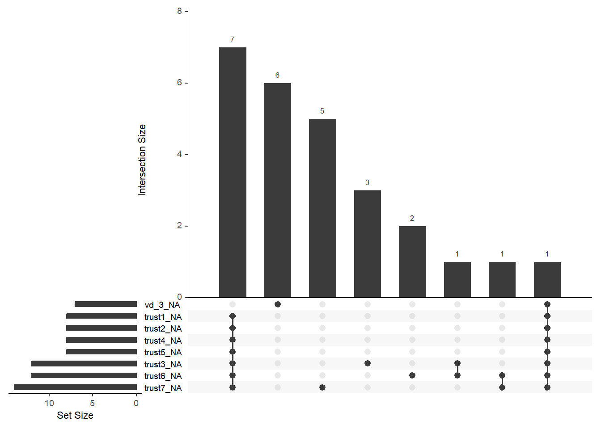
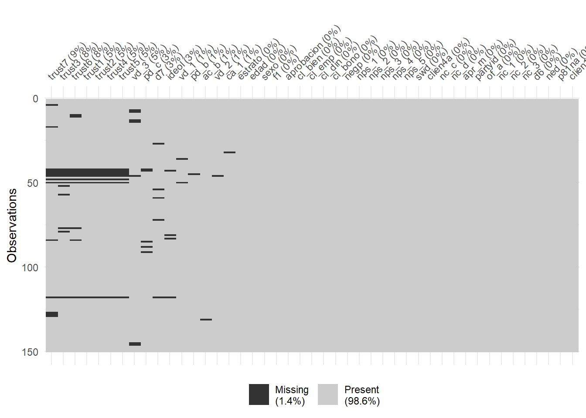
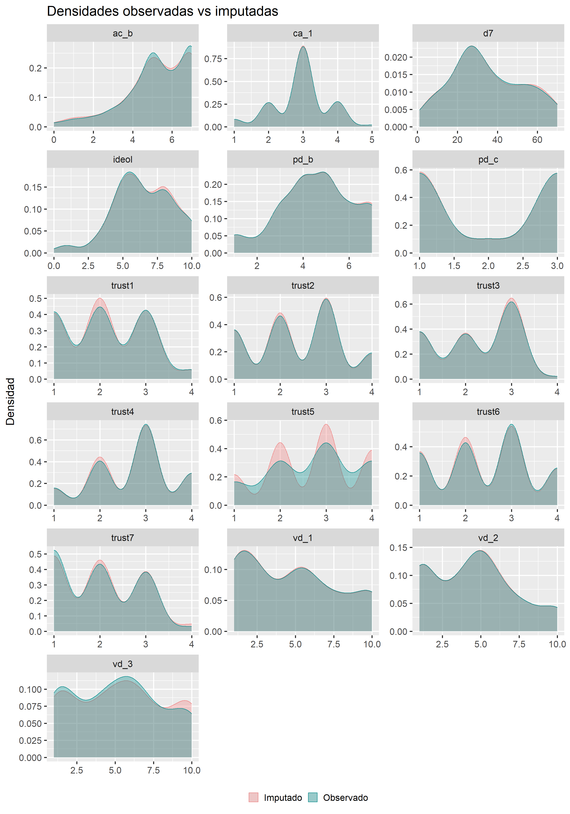
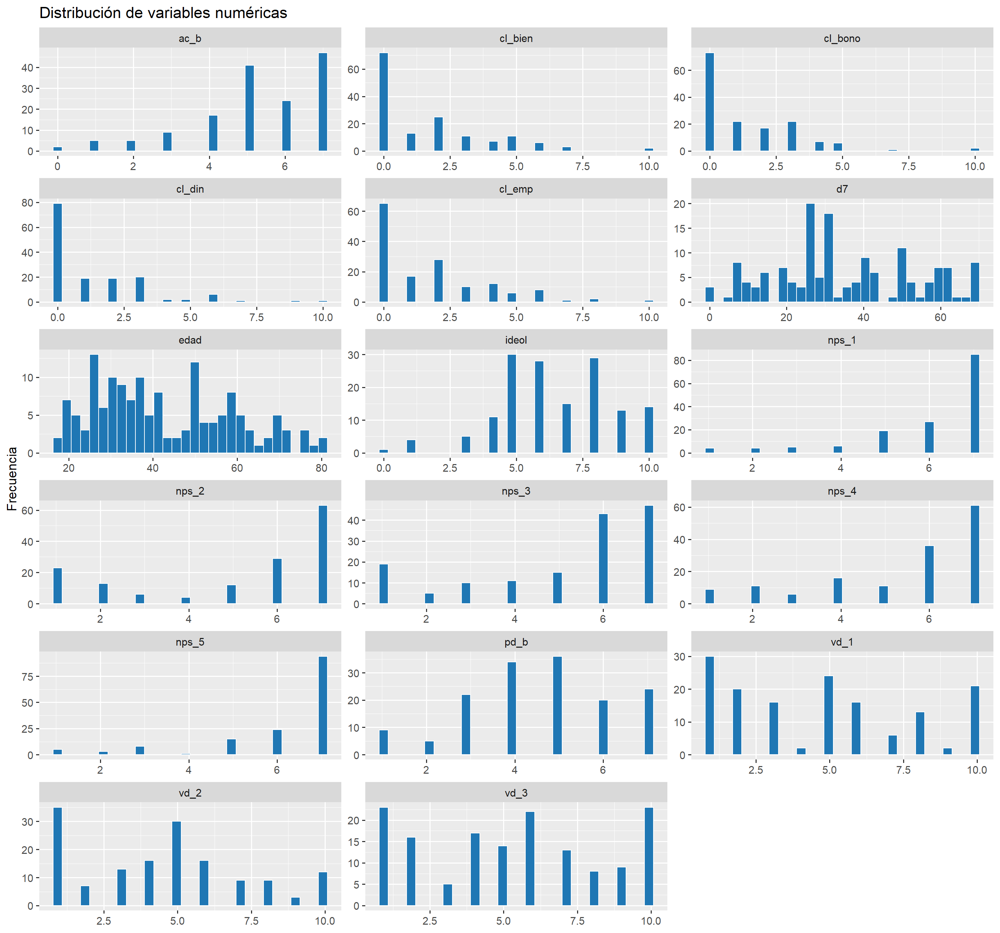
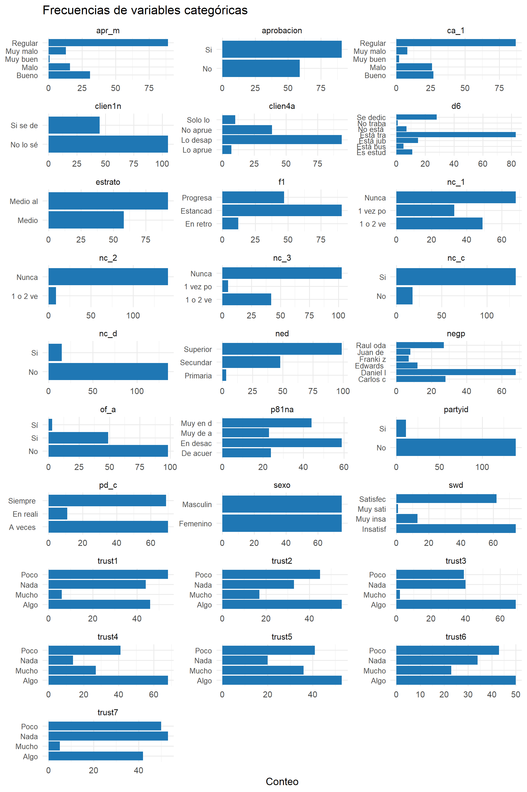
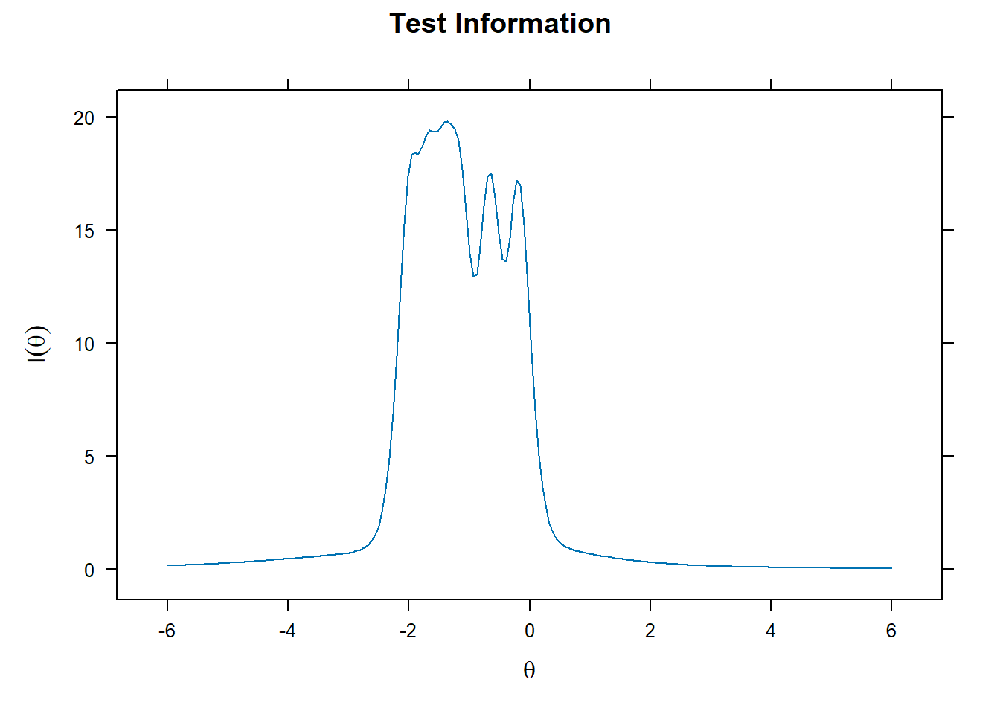
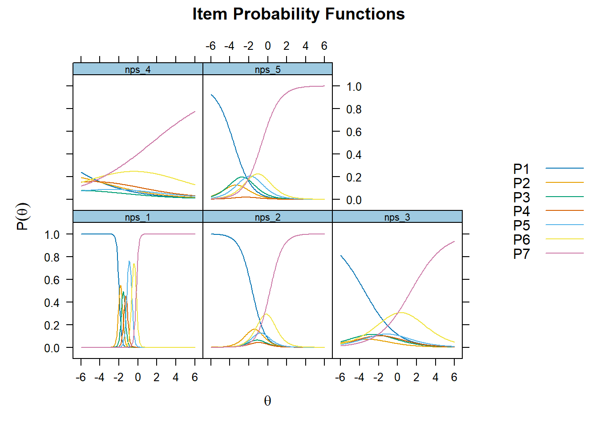
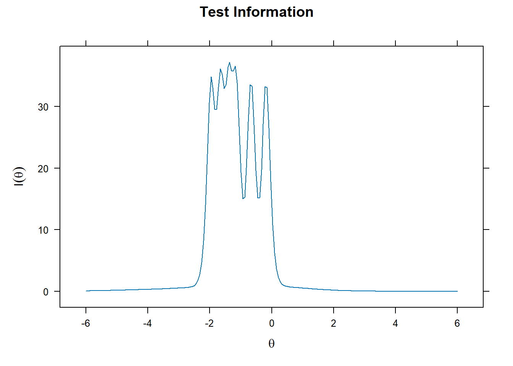
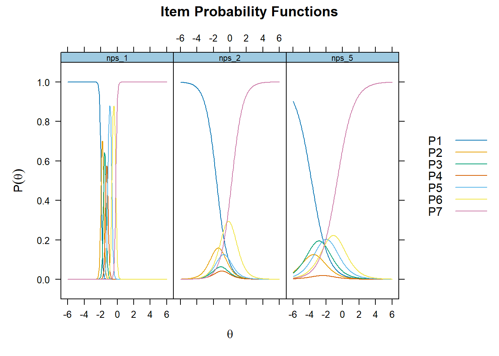

cdl <- read_xlsx("E:/Bases de datos/datasets_private/Dataset de encuestas.xlsx") %>%
dplyr::select(-n_case, -duracion, -zona, -object, -viatype,
-vianame, -n_vivenda, -nacionalidad, -residencia) %>%
dplyr::mutate(
across(where(is.character),
~ .x %>%
str_squish() %>% # elimina espacios extra
str_to_lower(locale = "es") %>% # pasa todo a minúsculas
str_to_sentence(locale = "es")) # primera letra en mayúscula
)Tesis_licenciatura
1 Data wrangling
En esta sección se realiza la importación inicial del conjunto de datos y una limpieza preliminar. Se eliminan variables irrelevantes y se estandariza el formato del texto, asegurando uniformidad en minúsculas, espacios eliminados y capitalización consistente.
1.1 Procesamiento de variables categóricas y numéricas
Esta etapa transforma cadenas de texto en factores y asegura que las variables numéricas tengan el formato adecuado. Además, se especifica un catálogo ordenado para las categorías ordinales, y se aplica una función personalizada para asegurar que estas variables estén correctamente definidas según su nivel de medición.
cdl <- cdl %>% mutate(across(where(is.character), as_factor)) %>%
mutate(across(where(is.numeric), as.numeric))# 1. Catálogos de niveles en el orden deseado ------------------------------
niveles <- list(
confianza = c("Nada", "Poco", "Algo", "Mucho"),
satisfaccion = c("Muy insatisfecho", "Insatisfecho", "Satisfecho", "Muy satisfecho"),
calidad = c("Muy malo", "Malo", "Regular", "Bueno", "Muy bueno"),
acuerdo = c("Muy en desacuerdo", "En desacuerdo","De acuerdo", "Muy de acuerdo"),
aprobacion = c("Lo desaprueba firmemente", "Lo desaprueba", "No aprueba, pero lo entiende", "Solo lo aprueba", "Lo aprueba firmemente"),
sistema = c("A veces un gobierno autoritario es mejor", "En realidad me da igual", "Siempre es preferible la democracia"),
educa = c("Primaria" , "Secundaria", "Superior"))Definimos una función que nos permita ordenar los niveles de cada variable ordinal tomando en cuenta
ordenar_factor <- function(x, cat_list = niveles, tol = 0.9) {
# Solo procesa texto / factores
if (!is.character(x) && !is.factor(x)) return(x)
vals <- unique(na.omit(str_squish(as.character(x))))
# Coincidencia completa
idx <- detect_index(cat_list, ~ all(vals %in% .x))
if (idx > 0) {
return(factor(x, levels = cat_list[[idx]], ordered = TRUE))
}
# Coincidencia parcial según 'tol'
idx <- detect_index(cat_list, ~ mean(vals %in% .x) >= tol)
if (idx > 0) {
return(factor(x, levels = cat_list[[idx]], ordered = TRUE))
}
x # No se encontró catálogo adecuado
}
# Aplicación en todo el data-frame
cdl <- cdl %>% mutate(across(where(~ is.character(.x) | is.factor(.x)), ordenar_factor))
skimr::skim(cdl) %>% as_tibble()| skim_type | skim_variable | n_missing | complete_rate | factor.ordered | factor.n_unique | factor.top_counts | numeric.mean | numeric.sd | numeric.p0 | numeric.p25 | numeric.p50 | numeric.p75 | numeric.p100 | numeric.hist |
|---|---|---|---|---|---|---|---|---|---|---|---|---|---|---|
| factor | estrato | 0 | 1.0000000 | FALSE | 2 | Med: 92, Med: 58 | NA | NA | NA | NA | NA | NA | NA | NA |
| factor | sexo | 0 | 1.0000000 | FALSE | 2 | Fem: 75, Mas: 75 | NA | NA | NA | NA | NA | NA | NA | NA |
| factor | f1 | 0 | 1.0000000 | FALSE | 3 | Est: 91, Pro: 47, En : 12 | NA | NA | NA | NA | NA | NA | NA | NA |
| factor | aprobacion | 0 | 1.0000000 | FALSE | 2 | Si: 91, No: 59 | NA | NA | NA | NA | NA | NA | NA | NA |
| factor | pd_c | 5 | 0.9666667 | TRUE | 3 | A v: 67, Sie: 67, En : 11 | NA | NA | NA | NA | NA | NA | NA | NA |
| factor | trust1 | 8 | 0.9466667 | TRUE | 4 | Poc: 47, Alg: 45, Nad: 44, Muc: 6 | NA | NA | NA | NA | NA | NA | NA | NA |
| factor | trust2 | 8 | 0.9466667 | TRUE | 4 | Alg: 52, Poc: 41, Nad: 32, Muc: 17 | NA | NA | NA | NA | NA | NA | NA | NA |
| factor | trust3 | 12 | 0.9200000 | TRUE | 4 | Alg: 62, Nad: 38, Poc: 36, Muc: 2 | NA | NA | NA | NA | NA | NA | NA | NA |
| factor | trust4 | 8 | 0.9466667 | TRUE | 4 | Alg: 66, Poc: 36, Muc: 26, Nad: 14 | NA | NA | NA | NA | NA | NA | NA | NA |
| factor | trust5 | 8 | 0.9466667 | TRUE | 4 | Alg: 51, Poc: 36, Muc: 36, Nad: 19 | NA | NA | NA | NA | NA | NA | NA | NA |
| factor | trust6 | 12 | 0.9200000 | TRUE | 4 | Alg: 48, Poc: 37, Nad: 31, Muc: 22 | NA | NA | NA | NA | NA | NA | NA | NA |
| factor | trust7 | 14 | 0.9066667 | TRUE | 4 | Nad: 52, Poc: 43, Alg: 38, Muc: 3 | NA | NA | NA | NA | NA | NA | NA | NA |
| factor | negp | 0 | 1.0000000 | FALSE | 6 | Dan: 68, Car: 28, Rau: 27, Edw: 12 | NA | NA | NA | NA | NA | NA | NA | NA |
| factor | swd | 0 | 1.0000000 | TRUE | 4 | Ins: 74, Sat: 62, Muy: 13, Muy: 1 | NA | NA | NA | NA | NA | NA | NA | NA |
| factor | clien4a | 0 | 1.0000000 | TRUE | 5 | Lo : 55, Lo : 39, No : 39, Sol: 10 | NA | NA | NA | NA | NA | NA | NA | NA |
| factor | nc_c | 0 | 1.0000000 | FALSE | 2 | Si: 132, No: 18 | NA | NA | NA | NA | NA | NA | NA | NA |
| factor | nc_d | 0 | 1.0000000 | FALSE | 2 | No: 135, Si: 15 | NA | NA | NA | NA | NA | NA | NA | NA |
| factor | apr_m | 0 | 1.0000000 | TRUE | 5 | Reg: 89, Bue: 31, Mal: 16, Muy: 13 | NA | NA | NA | NA | NA | NA | NA | NA |
| factor | ca_1 | 1 | 0.9933333 | TRUE | 5 | Reg: 86, Bue: 27, Mal: 26, Muy: 8 | NA | NA | NA | NA | NA | NA | NA | NA |
| factor | partyid | 0 | 1.0000000 | FALSE | 2 | No: 139, Si: 11 | NA | NA | NA | NA | NA | NA | NA | NA |
| factor | of_a | 0 | 1.0000000 | FALSE | 3 | No: 98, Si: 49, Sí: 3 | NA | NA | NA | NA | NA | NA | NA | NA |
| factor | nc_1 | 0 | 1.0000000 | FALSE | 4 | Nun: 68, 1 v: 33, 1 o: 26, 1 o: 23 | NA | NA | NA | NA | NA | NA | NA | NA |
| factor | nc_2 | 0 | 1.0000000 | FALSE | 3 | Nun: 141, 1 o: 8, 1 o: 1 | NA | NA | NA | NA | NA | NA | NA | NA |
| factor | nc_3 | 0 | 1.0000000 | FALSE | 4 | Nun: 103, 1 o: 28, 1 o: 14, 1 v: 5 | NA | NA | NA | NA | NA | NA | NA | NA |
| factor | d6 | 0 | 1.0000000 | FALSE | 7 | Est: 83, Se : 28, Est: 15, Es : 11 | NA | NA | NA | NA | NA | NA | NA | NA |
| factor | ned | 0 | 1.0000000 | TRUE | 3 | Sup: 99, Sec: 48, Pri: 3 | NA | NA | NA | NA | NA | NA | NA | NA |
| factor | p81na | 0 | 1.0000000 | TRUE | 4 | En : 59, Muy: 44, De : 24, Muy: 23 | NA | NA | NA | NA | NA | NA | NA | NA |
| factor | clien1n | 0 | 1.0000000 | FALSE | 2 | No : 105, Si : 45 | NA | NA | NA | NA | NA | NA | NA | NA |
| numeric | edad | 0 | 1.0000000 | NA | NA | NA | 42.786667 | 16.163837 | 18 | 30.00 | 40 | 55.75 | 81 | ▇▇▅▅▂ |
| numeric | pd_b | 1 | 0.9933333 | NA | NA | NA | 4.577181 | 1.636498 | 1 | 4.00 | 5 | 6.00 | 7 | ▂▅▆▇▇ |
| numeric | cl_bien | 0 | 1.0000000 | NA | NA | NA | 1.706667 | 2.205991 | 0 | 0.00 | 1 | 3.00 | 10 | ▇▁▁▁▁ |
| numeric | cl_emp | 0 | 1.0000000 | NA | NA | NA | 1.746667 | 2.117954 | 0 | 0.00 | 1 | 3.00 | 10 | ▇▂▁▁▁ |
| numeric | cl_din | 0 | 1.0000000 | NA | NA | NA | 1.313333 | 1.911241 | 0 | 0.00 | 0 | 2.00 | 10 | ▇▂▁▁▁ |
| numeric | cl_bono | 0 | 1.0000000 | NA | NA | NA | 1.380000 | 1.856134 | 0 | 0.00 | 1 | 2.75 | 10 | ▇▂▁▁▁ |
| numeric | ac_b | 1 | 0.9933333 | NA | NA | NA | 5.281879 | 1.668794 | 0 | 5.00 | 5 | 7.00 | 7 | ▁▁▃▅▇ |
| numeric | nps_1 | 0 | 1.0000000 | NA | NA | NA | 6.020000 | 1.503776 | 1 | 5.25 | 7 | 7.00 | 7 | ▁▁▁▂▇ |
| numeric | nps_2 | 0 | 1.0000000 | NA | NA | NA | 5.053333 | 2.307812 | 1 | 3.00 | 6 | 7.00 | 7 | ▃▁▁▁▇ |
| numeric | nps_3 | 0 | 1.0000000 | NA | NA | NA | 5.100000 | 2.055440 | 1 | 4.00 | 6 | 7.00 | 7 | ▂▁▁▁▇ |
| numeric | nps_4 | 0 | 1.0000000 | NA | NA | NA | 5.406667 | 1.900536 | 1 | 4.00 | 6 | 7.00 | 7 | ▂▁▁▁▇ |
| numeric | nps_5 | 0 | 1.0000000 | NA | NA | NA | 6.106667 | 1.546360 | 1 | 6.00 | 7 | 7.00 | 7 | ▁▁▁▁▇ |
| numeric | vd_1 | 2 | 0.9866667 | NA | NA | NA | 4.790540 | 3.112960 | 1 | 2.00 | 5 | 7.00 | 10 | ▇▃▆▃▃ |
| numeric | vd_2 | 1 | 0.9933333 | NA | NA | NA | 4.523490 | 2.771925 | 1 | 2.00 | 5 | 6.00 | 10 | ▇▅▇▃▂ |
| numeric | vd_3 | 7 | 0.9533333 | NA | NA | NA | 5.146853 | 2.950192 | 1 | 2.00 | 5 | 7.00 | 10 | ▇▅▇▅▅ |
| numeric | ideol | 4 | 0.9733333 | NA | NA | NA | 6.458904 | 2.162778 | 0 | 5.00 | 6 | 8.00 | 10 | ▁▂▇▆▃ |
| numeric | d7 | 5 | 0.9666667 | NA | NA | NA | 35.075862 | 18.277978 | 1 | 24.00 | 30 | 50.00 | 70 | ▃▇▇▃▅ |
1.2 Análisis e imputación de valors perdidos
En esta fase se evalúa la presencia de valores perdidos (NA) mediante métodos gráficos y estadísticos. Se realiza una prueba estadística (MCAR) para evaluar si estos valores faltantes están distribuidos de manera aleatoria o sistemática.
1.2.1 Detección de patrones
Aquí se resumen visual y estadísticamente los patrones de valores faltantes presentes en las variables del conjunto de datos.
# 1a. Resumen general
naniar::miss_var_summary(cdl) %>% as_tibble()| variable | n_miss | pct_miss |
|---|---|---|
| trust7 | 14 | 9.33 |
| trust3 | 12 | 8 |
| trust6 | 12 | 8 |
| trust1 | 8 | 5.33 |
| trust2 | 8 | 5.33 |
| trust4 | 8 | 5.33 |
| trust5 | 8 | 5.33 |
| vd_3 | 7 | 4.67 |
| pd_c | 5 | 3.33 |
| d7 | 5 | 3.33 |
| ideol | 4 | 2.67 |
| vd_1 | 2 | 1.33 |
| pd_b | 1 | 0.667 |
| ac_b | 1 | 0.667 |
| vd_2 | 1 | 0.667 |
| ca_1 | 1 | 0.667 |
| estrato | 0 | 0 |
| edad | 0 | 0 |
| sexo | 0 | 0 |
| f1 | 0 | 0 |
| aprobacion | 0 | 0 |
| cl_bien | 0 | 0 |
| cl_emp | 0 | 0 |
| cl_din | 0 | 0 |
| cl_bono | 0 | 0 |
| negp | 0 | 0 |
| nps_1 | 0 | 0 |
| nps_2 | 0 | 0 |
| nps_3 | 0 | 0 |
| nps_4 | 0 | 0 |
| nps_5 | 0 | 0 |
| swd | 0 | 0 |
| clien4a | 0 | 0 |
| nc_c | 0 | 0 |
| nc_d | 0 | 0 |
| apr_m | 0 | 0 |
| partyid | 0 | 0 |
| of_a | 0 | 0 |
| nc_1 | 0 | 0 |
| nc_2 | 0 | 0 |
| nc_3 | 0 | 0 |
| d6 | 0 | 0 |
| ned | 0 | 0 |
| p81na | 0 | 0 |
| clien1n | 0 | 0 |
# % de NA por variable
naniar::gg_miss_upset(cdl, nsets = 8)
# patrones conjuntos
vis_miss(cdl, sort_miss = TRUE) # mapa de calor
# 1b. Prueba MCAR (Little)
mcar_test <- naniar::mcar_test(cdl)
mcar_test %>% as_tibble()| statistic | df | p.value | missing.patterns |
|---|---|---|---|
| 990.7178 | 783 | 6e-07 | 20 |
1.2.2 Seleccion de variables a imputar
Se clasifican las variables según su tipo (ordinal, nominal, numérico, etc.) para luego definir estrategias específicas de imputación para cada una de ellas.
# 1. Vector con los ítems de confianza (trust_*)
vars_trust <- names(cdl) %>%
str_subset("(?i)^trust") # (?i) = búsqueda sin distinción de mayúsculas
# 2. Resto de variables ordinales (excluye las trust)
vars_ordinal <- names(cdl)[sapply(cdl, is.ordered)]%>%
setdiff(vars_trust)
# 3. Variables nominales
vars_nominal <- names(cdl)[sapply(cdl, \(x) is.factor(x) && !is.ordered(x))]
# 4. Variables numéricas
vars_numeric <- names(cdl)[sapply(cdl, is.numeric)]
## Vectores ya definidos
imp_vars <- c(vars_trust, vars_ordinal, vars_nominal, vars_numeric)
## 2. Asegura clase 'ordered' para trust + ordinales ---
cdl <- cdl %>% mutate(across(all_of(c(vars_trust, vars_ordinal)),
~ factor(.x, ordered = TRUE)))## 3. Matriz de predictores usa quickpred pero baja el umbral a .05 porque el %.NA es pequeño
predM <- quickpred(cdl[imp_vars], mincor = .05, include = "all")
# añade explícitamente edad y sexo como predictores universales
predM[ , c("edad", "sexo")] <- 1
## 4. Vector de métodos por columna
meth <- make.method(cdl[imp_vars])meth[vars_numeric] <- "pmm" # robusto para pequeñas n
meth[c(vars_trust, vars_ordinal)]<- "polr"
meth[vars_nominal] <- if_else(
sapply(cdl[vars_nominal], nlevels) == 2, "logreg", "polyreg"
)1.2.3 Proceso de imputación
Se lleva a cabo la imputación múltiple mediante el método MICE (Multiple Imputation by Chained Equations), especificando métodos de imputación específicos para variables ordinales (polr), nominales (polyreg, logreg) y numéricas (pmm). El resultado es un conjunto de datos completo sin valores perdidos.
## 5. Imputación
set.seed(2025)
imp <- mice(cdl[imp_vars],
m = 10, # 10 conjuntos bastan (≤ 10 % NA)
maxit = 30, # converge rápido con pocos NA
predictorMatrix = predM,
method = meth,
ridge = 1e-5, # estabiliza con n = 150
printFlag = FALSE)# 1. Primer data-set completo (imputación 1)
cdl_imp <- complete(imp, 1)
# 2. Variables que tenían NA en la base original
vars_miss <- names(which(colSums(is.na(cdl)) > 0))1.2.4 Comparación de datos originales vs. imputados
Aquí se comparan visual y estadísticamente las distribuciones de las variables antes (observadas) y después (imputadas) del proceso de imputación múltiple, con el objetivo de verificar la calidad y coherencia del procedimiento aplicado. La gráfica muestra densidades suavizadas que permiten evaluar si las imputaciones preservan adecuadamente las características esenciales de las variables originales.
El procedimiento seguido es:
- Selección del primer conjunto imputado:
Se extrae el primer dataset completo obtenido mediante el método de imputación múltiple (complete(imp, 1)).
- Identificación de variables con valores faltantes:
Se detectan las variables originales que contenían valores perdidos utilizando un conteo de valores NA.
- Unificación de datos observados e imputados:
Los valores observados (originales) y los valores imputados del primer dataset se combinan en un solo marco de datos, etiquetando cada registro claramente como “Observado” o “Imputado”.
- Transformación y visualización:
Se transforman los datos combinados a formato largo para facilitar la creación de gráficos, generando una densidad para cada variable por separado, comparando ambos tipos de datos.
- Interpretación visual:
Un ajuste cercano entre las curvas de datos observados e imputados indica que el procedimiento de imputación ha logrado capturar de manera adecuada la estructura original de los datos. Diferencias notables en las densidades sugerirían que la imputación podría haber alterado la distribución original de las variables y que podrían requerirse ajustes adicionales en el modelo o método de imputación seleccionado.
cdl_imp <- complete(imp, 1) # primer set imputado
vars_miss <- names(which(colSums(is.na(cdl)) > 0)) # columnas con NA
bind_rows(
cdl %>% dplyr::select(all_of(vars_miss)) %>%
dplyr::mutate(across(everything(), as.numeric),
.src = "Observado"),
cdl_imp %>% dplyr::select(all_of(vars_miss)) %>%
dplyr::mutate(across(everything(), as.numeric),
.src = "Imputado")
) %>%
pivot_longer(-.src, names_to = "variable", values_to = "valor") %>%
drop_na(valor) %>% # elimina NA residuales
ggplot(aes(x = valor, colour = .src, fill = .src)) +
geom_density(alpha = .35) +
facet_wrap(~ variable, scales = "free", ncol = 3) +
scale_colour_manual(values = c(Observado = "#008B8B",
Imputado = "#F08080"), name = "") +
scale_fill_manual(values = c(Observado = "#008B8B",
Imputado = "#F08080"), name = "") +
labs(title = "Densidades observadas vs imputadas",
y = "Densidad", x = NULL) +
theme_grey(base_size = 20) +
theme(legend.position = "bottom")
Primero, utilizamos complete(imp, 1) para obtener el primer conjunto de datos completo tras la imputación múltiple. A continuación, identificamos cuáles eran las variables que contenían valores faltantes en la base original, para centrar nuestro análisis en ellas.
# 1. Primer data-set imputado
cdl_imp <- complete(imp, 1)
# 2. Variables que tenían NA en la base original
vars_miss <- names(which(colSums(is.na(cdl)) > 0))Con las variables detectadas, construimos un tibble que, para cada una, calcula la media, mediana y varianza tanto en los datos originales (observados) como en los imputados. Esto nos permite cuantificar posibles cambios en la distribución motivados por la imputación.
Finalmente, redondeamos los estadísticos a tres decimales y desplegamos la tabla con kableExtra, aplicando estilos que mejoran la legibilidad y resaltan las variables analizadas.
# 3. Tabla de medias, medianas y varianzas
tabla_stats <- tibble(variable = vars_miss) %>%
rowwise() %>%
mutate(
mean_obs = mean (as.numeric(cdl[[variable]]), na.rm = TRUE),
median_obs = median(as.numeric(cdl[[variable]]), na.rm = TRUE),
var_obs = var (as.numeric(cdl[[variable]]), na.rm = TRUE),
mean_imp = mean (as.numeric(cdl_imp[[variable]]), na.rm = TRUE),
median_imp = median(as.numeric(cdl_imp[[variable]]), na.rm = TRUE),
var_imp = var (as.numeric(cdl_imp[[variable]]), na.rm = TRUE)
) %>% ungroup()
# 4. Imprime en una tabla ordenada
tabla_stats %>%
mutate(across(-variable, round, 3)) %>%
kableExtra::kable("html", caption = "Estadísticos resumen: valores observados vs imputados") %>%
kableExtra::kable_styling(full_width = FALSE,
bootstrap_options = c("striped", "hover", "condensed", "responsive")) %>%
kableExtra::column_spec(1, bold = TRUE)| variable | mean_obs | median_obs | var_obs | mean_imp | median_imp | var_imp |
|---|---|---|---|---|---|---|
| pd_b | 4.577 | 5 | 2.678 | 4.593 | 5.0 | 2.699 |
| ac_b | 5.282 | 5 | 2.785 | 5.253 | 5.0 | 2.888 |
| pd_c | 2.000 | 2 | 0.931 | 1.993 | 2.0 | 0.933 |
| trust1 | 2.092 | 2 | 0.793 | 2.093 | 2.0 | 0.756 |
| trust2 | 2.380 | 2 | 0.932 | 2.373 | 2.0 | 0.907 |
| trust3 | 2.203 | 2 | 0.747 | 2.220 | 2.0 | 0.737 |
| trust4 | 2.732 | 3 | 0.765 | 2.720 | 3.0 | 0.753 |
| trust5 | 2.732 | 3 | 0.978 | 2.700 | 3.0 | 0.963 |
| trust6 | 2.442 | 3 | 1.022 | 2.413 | 2.0 | 1.009 |
| trust7 | 1.941 | 2 | 0.752 | 1.993 | 2.0 | 0.772 |
| vd_1 | 4.791 | 5 | 9.691 | 4.773 | 5.0 | 9.613 |
| vd_2 | 4.523 | 5 | 7.684 | 4.533 | 5.0 | 7.647 |
| vd_3 | 5.147 | 5 | 8.704 | 5.373 | 5.5 | 9.350 |
| ca_1 | 2.926 | 3 | 0.623 | 2.927 | 3.0 | 0.619 |
| ideol | 6.459 | 6 | 4.678 | 6.500 | 6.0 | 4.628 |
| d7 | 35.076 | 30 | 334.084 | 35.147 | 30.0 | 338.045 |
## 7. Sustituye primera imputación y guarda ------------
cdl[imp_vars] <- complete(imp, 1)1.3 Análisis descriptivo
Esta sección proporciona estadísticas básicas de tendencia central, dispersión y distribución para describir las variables tras la imputación, ofreciendo una visión general del perfil de los datos.
# Prepara la tabla y el título
tbl <- skimr::skim(cdl) %>% as_tibble()
cat("**Resumen de cdl**\n\n")**Resumen de cdl**# Imprime la tabla con scroll vertical
tbl %>%
kable("html", booktabs = TRUE) %>%
kable_styling(full_width = FALSE) %>%
scroll_box(height = "400px", width = "100%")| skim_type | skim_variable | n_missing | complete_rate | factor.ordered | factor.n_unique | factor.top_counts | numeric.mean | numeric.sd | numeric.p0 | numeric.p25 | numeric.p50 | numeric.p75 | numeric.p100 | numeric.hist |
|---|---|---|---|---|---|---|---|---|---|---|---|---|---|---|
| factor | estrato | 0 | 1 | FALSE | 2 | Med: 92, Med: 58 | NA | NA | NA | NA | NA | NA | NA | NA |
| factor | sexo | 0 | 1 | FALSE | 2 | Fem: 75, Mas: 75 | NA | NA | NA | NA | NA | NA | NA | NA |
| factor | f1 | 0 | 1 | FALSE | 3 | Est: 91, Pro: 47, En : 12 | NA | NA | NA | NA | NA | NA | NA | NA |
| factor | aprobacion | 0 | 1 | FALSE | 2 | Si: 91, No: 59 | NA | NA | NA | NA | NA | NA | NA | NA |
| factor | pd_c | 0 | 1 | TRUE | 3 | A v: 70, Sie: 69, En : 11 | NA | NA | NA | NA | NA | NA | NA | NA |
| factor | trust1 | 0 | 1 | TRUE | 4 | Poc: 54, Alg: 46, Nad: 44, Muc: 6 | NA | NA | NA | NA | NA | NA | NA | NA |
| factor | trust2 | 0 | 1 | TRUE | 4 | Alg: 55, Poc: 45, Nad: 33, Muc: 17 | NA | NA | NA | NA | NA | NA | NA | NA |
| factor | trust3 | 0 | 1 | TRUE | 4 | Alg: 69, Nad: 40, Poc: 39, Muc: 2 | NA | NA | NA | NA | NA | NA | NA | NA |
| factor | trust4 | 0 | 1 | TRUE | 4 | Alg: 68, Poc: 41, Muc: 27, Nad: 14 | NA | NA | NA | NA | NA | NA | NA | NA |
| factor | trust5 | 0 | 1 | TRUE | 4 | Alg: 53, Poc: 41, Muc: 36, Nad: 20 | NA | NA | NA | NA | NA | NA | NA | NA |
| factor | trust6 | 0 | 1 | TRUE | 4 | Alg: 50, Poc: 43, Nad: 34, Muc: 23 | NA | NA | NA | NA | NA | NA | NA | NA |
| factor | trust7 | 0 | 1 | TRUE | 4 | Nad: 53, Poc: 50, Alg: 42, Muc: 5 | NA | NA | NA | NA | NA | NA | NA | NA |
| factor | negp | 0 | 1 | FALSE | 6 | Dan: 68, Car: 28, Rau: 27, Edw: 12 | NA | NA | NA | NA | NA | NA | NA | NA |
| factor | swd | 0 | 1 | TRUE | 4 | Ins: 74, Sat: 62, Muy: 13, Muy: 1 | NA | NA | NA | NA | NA | NA | NA | NA |
| factor | clien4a | 0 | 1 | TRUE | 5 | Lo : 55, Lo : 39, No : 39, Sol: 10 | NA | NA | NA | NA | NA | NA | NA | NA |
| factor | nc_c | 0 | 1 | FALSE | 2 | Si: 132, No: 18 | NA | NA | NA | NA | NA | NA | NA | NA |
| factor | nc_d | 0 | 1 | FALSE | 2 | No: 135, Si: 15 | NA | NA | NA | NA | NA | NA | NA | NA |
| factor | apr_m | 0 | 1 | TRUE | 5 | Reg: 89, Bue: 31, Mal: 16, Muy: 13 | NA | NA | NA | NA | NA | NA | NA | NA |
| factor | ca_1 | 0 | 1 | TRUE | 5 | Reg: 87, Bue: 27, Mal: 26, Muy: 8 | NA | NA | NA | NA | NA | NA | NA | NA |
| factor | partyid | 0 | 1 | FALSE | 2 | No: 139, Si: 11 | NA | NA | NA | NA | NA | NA | NA | NA |
| factor | of_a | 0 | 1 | FALSE | 3 | No: 98, Si: 49, Sí: 3 | NA | NA | NA | NA | NA | NA | NA | NA |
| factor | nc_1 | 0 | 1 | FALSE | 4 | Nun: 68, 1 v: 33, 1 o: 26, 1 o: 23 | NA | NA | NA | NA | NA | NA | NA | NA |
| factor | nc_2 | 0 | 1 | FALSE | 3 | Nun: 141, 1 o: 8, 1 o: 1 | NA | NA | NA | NA | NA | NA | NA | NA |
| factor | nc_3 | 0 | 1 | FALSE | 4 | Nun: 103, 1 o: 28, 1 o: 14, 1 v: 5 | NA | NA | NA | NA | NA | NA | NA | NA |
| factor | d6 | 0 | 1 | FALSE | 7 | Est: 83, Se : 28, Est: 15, Es : 11 | NA | NA | NA | NA | NA | NA | NA | NA |
| factor | ned | 0 | 1 | TRUE | 3 | Sup: 99, Sec: 48, Pri: 3 | NA | NA | NA | NA | NA | NA | NA | NA |
| factor | p81na | 0 | 1 | TRUE | 4 | En : 59, Muy: 44, De : 24, Muy: 23 | NA | NA | NA | NA | NA | NA | NA | NA |
| factor | clien1n | 0 | 1 | FALSE | 2 | No : 105, Si : 45 | NA | NA | NA | NA | NA | NA | NA | NA |
| numeric | edad | 0 | 1 | NA | NA | NA | 42.786667 | 16.163837 | 18 | 30.00 | 40.0 | 55.75 | 81 | ▇▇▅▅▂ |
| numeric | pd_b | 0 | 1 | NA | NA | NA | 4.593333 | 1.642950 | 1 | 4.00 | 5.0 | 6.00 | 7 | ▂▃▆▆▇ |
| numeric | cl_bien | 0 | 1 | NA | NA | NA | 1.706667 | 2.205991 | 0 | 0.00 | 1.0 | 3.00 | 10 | ▇▁▁▁▁ |
| numeric | cl_emp | 0 | 1 | NA | NA | NA | 1.746667 | 2.117954 | 0 | 0.00 | 1.0 | 3.00 | 10 | ▇▂▁▁▁ |
| numeric | cl_din | 0 | 1 | NA | NA | NA | 1.313333 | 1.911241 | 0 | 0.00 | 0.0 | 2.00 | 10 | ▇▂▁▁▁ |
| numeric | cl_bono | 0 | 1 | NA | NA | NA | 1.380000 | 1.856134 | 0 | 0.00 | 1.0 | 2.75 | 10 | ▇▂▁▁▁ |
| numeric | ac_b | 0 | 1 | NA | NA | NA | 5.253333 | 1.699533 | 0 | 4.25 | 5.0 | 7.00 | 7 | ▁▁▃▅▇ |
| numeric | nps_1 | 0 | 1 | NA | NA | NA | 6.020000 | 1.503776 | 1 | 5.25 | 7.0 | 7.00 | 7 | ▁▁▁▂▇ |
| numeric | nps_2 | 0 | 1 | NA | NA | NA | 5.053333 | 2.307812 | 1 | 3.00 | 6.0 | 7.00 | 7 | ▃▁▁▁▇ |
| numeric | nps_3 | 0 | 1 | NA | NA | NA | 5.100000 | 2.055440 | 1 | 4.00 | 6.0 | 7.00 | 7 | ▂▁▁▁▇ |
| numeric | nps_4 | 0 | 1 | NA | NA | NA | 5.406667 | 1.900536 | 1 | 4.00 | 6.0 | 7.00 | 7 | ▂▁▁▁▇ |
| numeric | nps_5 | 0 | 1 | NA | NA | NA | 6.106667 | 1.546360 | 1 | 6.00 | 7.0 | 7.00 | 7 | ▁▁▁▁▇ |
| numeric | vd_1 | 0 | 1 | NA | NA | NA | 4.773333 | 3.100437 | 1 | 2.00 | 5.0 | 7.00 | 10 | ▇▃▆▃▃ |
| numeric | vd_2 | 0 | 1 | NA | NA | NA | 4.533333 | 2.765236 | 1 | 2.00 | 5.0 | 6.00 | 10 | ▇▅▇▃▂ |
| numeric | vd_3 | 0 | 1 | NA | NA | NA | 5.373333 | 3.057715 | 1 | 2.00 | 5.5 | 8.00 | 10 | ▇▅▇▅▆ |
| numeric | ideol | 0 | 1 | NA | NA | NA | 6.500000 | 2.151166 | 0 | 5.00 | 6.0 | 8.00 | 10 | ▁▂▇▆▃ |
| numeric | d7 | 0 | 1 | NA | NA | NA | 35.146667 | 18.386013 | 1 | 24.00 | 30.0 | 50.00 | 70 | ▃▇▇▃▅ |
1.3.1 Distribuciones (Gráficos)
Se presentan visualizaciones detalladas que muestran las distribuciones de todas las variables numéricas, facilitando la detección visual de patrones atípicos o tendencias particulares.
# ── Distribución de todas las variables numéricas
cdl %>%
dplyr::select(where(is.numeric)) %>% # sólo numéricas
pivot_longer(everything(), names_to = "variable",
values_to = "valor") %>%
ggplot(aes(x = valor)) +
geom_histogram(bins = 30, fill = "#1F77B4", colour = "white") +
facet_wrap(~ variable, scales = "free", ncol = 3) +
labs(title = "Distribución de variables numéricas",
x = NULL, y = "Frecuencia") +
theme_grey(base_size = 14)
cdl %>%
dplyr::select(where(is.factor)) %>% # sólo factores
mutate(across(everything(), as.character)) %>% # homogeneiza tipo
pivot_longer(everything(),
names_to = "variable",
values_to = "valor") %>%
drop_na(valor) %>%
mutate(valor = str_trunc(valor, 8, side = "right", ellipsis = "")) %>% # ≤ 8 caracteres
ggplot(aes(x = valor)) +
geom_bar(fill = "#1F77B4") +
facet_wrap(~ variable, scales = "free", ncol = 3) +
coord_flip() +
labs(title = "Frecuencias de variables categóricas",
x = NULL, y = "Conteo") +
theme_minimal(base_size = 14) +
theme(axis.text.y = element_text(size = 10), # texto más grande
legend.position = "none")
2 Análisis de variable de interés
En esta sección se estudian en profundidad las variables clave del análisis relacionadas con el apoyo político, definidas en dimensiones y subdimensiones específicas. Se aplican técnicas psicométricas como análisis de confiabilidad (alfa de Cronbach) y Teoría de Respuesta al Ítem (IRT).
2.1 El apoyo político como constructo
2.1.1 Dimensión 1: Apego a la comunidad
Solo un indicador
2.1.2 Dimensión 2: Valoración de los principios del régimen al nivel subnacional
En esta dimensión se utilizan cuatro indicadores. Los referidos a la tolerancia a la oposición se resumen en un índice compuesto
- Grado de acuerdo con la democracia como mejor régimen (pd_b)
- Tolerancia a la movilización social en contra del alcalde (vd_1)
- Tolerancia a la participación electoral de opositores al alcalde (vd_2)
- Tolerancia al pronunciamiento de opositores al alcalde en medios de comunicación (vd_3)
alpha_result <- cdl %>% dplyr::select(vd_1, vd_2, vd_3) %>% psych::alpha()
alpha_general_df <- as.data.frame(alpha_result$total)
alpha_general_df %>% as_tibble()| raw_alpha | std.alpha | G6(smc) | average_r | S/N | ase | mean | sd | median_r |
|---|---|---|---|---|---|---|---|---|
| 0.7927418 | 0.7953198 | 0.7379955 | 0.5643126 | 3.88567 | 0.0296636 | 4.893333 | 2.504082 | 0.5031253 |
alpha_items_df <- as.data.frame(alpha_result$item.stats)
alpha_items_df %>% as_tibble()| n | raw.r | std.r | r.cor | r.drop | mean | sd |
|---|---|---|---|---|---|---|
| 150 | 0.8745749 | 0.8711811 | 0.7936589 | 0.6896996 | 4.773333 | 3.100437 |
| 150 | 0.8563591 | 0.8665561 | 0.7848444 | 0.6870465 | 4.533333 | 2.765236 |
| 150 | 0.7955764 | 0.7892918 | 0.5923831 | 0.5398416 | 5.373333 | 3.057715 |
2.1.3 Dimensión 3: Evaluación del desempeño del régimen al nivel subnacional
En esta dimensión se utilizan ocho indicadores. Los referidos a la confianza institucional a la oposición se resumen en un índice compuesto
- Satisfacción con la democracia distrital (swd)
- Confianza el municipio (trust1)
- Confianza en el serenazgo (trust2)
- Confianza en la DEMUNA (trust3)
- Confianza en el servicio de salud distrital (trust4)
- Confianza en las iglesias del distrito (trust5)
- Confianza en el serv CIAM, (trust6)
- Confianza en la Asociación de Pobladores (trust7)
2.1.3.1 Índice de confianza institucional
2.1.3.1.1 Análisis de confiabilidad
# 1. Diccionario de recodificación
numero <- c("Nada" = 0,"Poco" = 1, "Algo" = 2, "Mucho" = 3)
# 2. Recodificar → numérico 0–3 y filtrar casos completos -----------------
vars_trust <- cdl %>% dplyr:: mutate(across(dplyr::starts_with("trust"),
~ dplyr :: recode(.x, !!!numero) %>% as.integer())) %>%
dplyr:: select(starts_with("trust"))
# 3. Matriz de correlaciones policóricas -----------------------------------
matriz_rho <- vars_trust %>% as.data.frame() %>%
psych::polychoric(smooth = TRUE) %>% magrittr::extract2("rho")
matriz_rho %>% as_tibble()| trust1 | trust2 | trust3 | trust4 | trust5 | trust6 | trust7 |
|---|---|---|---|---|---|---|
| 1.0000000 | 0.7787174 | 0.4116304 | 0.2234042 | 0.2137010 | 0.4056683 | 0.3422124 |
| 0.7787174 | 1.0000000 | 0.3966996 | 0.3038865 | 0.1760524 | 0.4506537 | 0.4453391 |
| 0.4116304 | 0.3966996 | 1.0000000 | 0.3603701 | 0.3944823 | 0.5352595 | -0.0628872 |
| 0.2234042 | 0.3038865 | 0.3603701 | 1.0000000 | 0.6555689 | 0.2580523 | -0.0855886 |
| 0.2137010 | 0.1760524 | 0.3944823 | 0.6555689 | 1.0000000 | 0.3218085 | -0.1172988 |
| 0.4056683 | 0.4506537 | 0.5352595 | 0.2580523 | 0.3218085 | 1.0000000 | 0.3934075 |
| 0.3422124 | 0.4453391 | -0.0628872 | -0.0855886 | -0.1172988 | 0.3934075 | 1.0000000 |
alpha_result <- vars_trust %>% psych::alpha()
alpha_general_df <- as.data.frame(alpha_result$total)
alpha_general_df %>% as_tibble()| raw_alpha | std.alpha | G6(smc) | average_r | S/N | ase | mean | sd | median_r |
|---|---|---|---|---|---|---|---|---|
| 0.7251056 | 0.723618 | 0.7722862 | 0.2722117 | 2.618181 | 0.0343938 | 1.359048 | 0.5638852 | 0.2995054 |
alpha_items_df <- as.data.frame(alpha_result$item.stats)
alpha_items_df %>% as_tibble()| n | raw.r | std.r | r.cor | r.drop | mean | sd |
|---|---|---|---|---|---|---|
| 150 | 0.6936956 | 0.7011173 | 0.6626180 | 0.5492182 | 1.0933333 | 0.8696730 |
| 150 | 0.7379341 | 0.7403021 | 0.7245188 | 0.5927560 | 1.3733333 | 0.9521905 |
| 150 | 0.6083576 | 0.6142150 | 0.5178468 | 0.4418756 | 1.2200000 | 0.8582016 |
| 150 | 0.5731381 | 0.5763838 | 0.4943796 | 0.3958671 | 1.7200000 | 0.8679220 |
| 150 | 0.5701906 | 0.5614980 | 0.4785026 | 0.3645022 | 1.7000000 | 0.9813701 |
| 150 | 0.6993024 | 0.6873196 | 0.6093415 | 0.5283126 | 1.4133333 | 1.0045979 |
| 150 | 0.4093734 | 0.4125183 | 0.2857845 | 0.2005911 | 0.9933333 | 0.8785029 |
2.1.4 Dimensión 4: Involucramiento con normas y procedimientos
En esta dimensión se emplean cuatro indicadores
- Asistencia organizaciones religiosas (nc_1)
- Asistencia a organizaciones políticas (nc_2)
- Asistencia a juntas vecinales (nc_2)
2.1.5 Dimensión 5:Autoridades
- Aprobación municipal ( aprobacion)
2.2 La tolerancia al clientelismo
2.2.1 Análisis de confiabilidad
alpha_result <- cdl %>% dplyr::select(cl_bien, cl_bono, cl_din, cl_emp) %>% psych::alpha()
alpha_general_df <- as.data.frame(alpha_result$total)
alpha_general_df %>% as_tibble()| raw_alpha | std.alpha | G6(smc) | average_r | S/N | ase | mean | sd | median_r |
|---|---|---|---|---|---|---|---|---|
| 0.8751516 | 0.8753364 | 0.8556123 | 0.6370759 | 7.021588 | 0.0165204 | 1.536667 | 1.729721 | 0.6606827 |
alpha_items_df <- as.data.frame(alpha_result$item.stats)
alpha_items_df %>% as_tibble()| n | raw.r | std.r | r.cor | r.drop | mean | sd |
|---|---|---|---|---|---|---|
| 150 | 0.8791948 | 0.8677056 | 0.8192481 | 0.7618334 | 1.706667 | 2.205991 |
| 150 | 0.7643736 | 0.7798570 | 0.6576709 | 0.6098059 | 1.380000 | 1.856134 |
| 150 | 0.8836650 | 0.8891365 | 0.8442010 | 0.7920777 | 1.313333 | 1.911241 |
| 150 | 0.8837359 | 0.8757650 | 0.8353858 | 0.7769912 | 1.746667 | 2.117954 |
2.3 Partidismo negativo
2.3.1 Análisis de confiabilidad
alpha_result <- cdl %>% dplyr::select(starts_with("nps")) %>% psych::alpha()
alpha_general_df <- as.data.frame(alpha_result$total)
alpha_general_df %>% as_tibble()| raw_alpha | std.alpha | G6(smc) | average_r | S/N | ase | mean | sd | median_r |
|---|---|---|---|---|---|---|---|---|
| 0.6298214 | 0.6420029 | 0.6205728 | 0.2639827 | 1.793319 | 0.0473795 | 5.537333 | 1.198464 | 0.2529052 |
alpha_items_df <- as.data.frame(alpha_result$item.stats)
alpha_items_df %>% as_tibble()| n | raw.r | std.r | r.cor | r.drop | mean | sd |
|---|---|---|---|---|---|---|
| 150 | 0.6307952 | 0.6646694 | 0.5641756 | 0.4396693 | 6.020000 | 1.503776 |
| 150 | 0.6908408 | 0.6507115 | 0.5284008 | 0.3894508 | 5.053333 | 2.307812 |
| 150 | 0.6689696 | 0.6492959 | 0.5045985 | 0.4016128 | 5.100000 | 2.055440 |
| 150 | 0.6070548 | 0.5987836 | 0.4399080 | 0.3427092 | 5.406667 | 1.900536 |
| 150 | 0.5953701 | 0.6427295 | 0.4886395 | 0.3870991 | 6.106667 | 1.546360 |
2.3.2 Analisis IRT
2.3.2.1 Espcificación de items
En esta sección se lleva a cabo el modelado de la dimensión de partidismo negativo mediante un modelo de respuesta graduada (GRM) de un solo factor, para «calibrar» los ítems que miden esa actitud y extraer un puntaje latente estandarizado. El flujo de trabajo es el siguiente:
# Se seleccionan los cinco indicadores originales de nps y se convierten a formato numérico, requisito para el paquete mirt:
nps_data1 <- cdl %>% dplyr:: select(nps_1, nps_2, nps_3, nps_4, nps_5) %>%
mutate(across(everything(), as.numeric))
# Se ajusta un modelo de Respuesta Graduada con un único factor subyacente, que asume que cada ítem discrimina en la misma dimensión latente de partidismo negativo
mod_nps1 <- mirt(data = nps_data1, model = 1, itemtype = "graded")
Iteration: 1, Log-Lik: -1092.674, Max-Change: 0.59911
Iteration: 2, Log-Lik: -1087.711, Max-Change: 0.32527
Iteration: 3, Log-Lik: -1084.824, Max-Change: 0.34881
Iteration: 4, Log-Lik: -1081.299, Max-Change: 0.38494
Iteration: 5, Log-Lik: -1079.971, Max-Change: 0.21049
Iteration: 6, Log-Lik: -1079.392, Max-Change: 0.32650
Iteration: 7, Log-Lik: -1078.640, Max-Change: 0.22209
Iteration: 8, Log-Lik: -1078.411, Max-Change: 0.25796
Iteration: 9, Log-Lik: -1078.246, Max-Change: 0.23923
Iteration: 10, Log-Lik: -1077.676, Max-Change: 0.25075
Iteration: 11, Log-Lik: -1077.582, Max-Change: 0.19844
Iteration: 12, Log-Lik: -1077.531, Max-Change: 0.19394
Iteration: 13, Log-Lik: -1077.307, Max-Change: 0.18266
Iteration: 14, Log-Lik: -1077.277, Max-Change: 0.11951
Iteration: 15, Log-Lik: -1077.262, Max-Change: 0.18253
Iteration: 16, Log-Lik: -1077.203, Max-Change: 0.15817
Iteration: 17, Log-Lik: -1077.166, Max-Change: 0.16634
Iteration: 18, Log-Lik: -1077.147, Max-Change: 0.16665
Iteration: 19, Log-Lik: -1077.048, Max-Change: 0.15965
Iteration: 20, Log-Lik: -1077.034, Max-Change: 0.16066
Iteration: 21, Log-Lik: -1077.020, Max-Change: 0.02279
Iteration: 22, Log-Lik: -1077.020, Max-Change: 0.16062
Iteration: 23, Log-Lik: -1077.007, Max-Change: 0.16141
Iteration: 24, Log-Lik: -1076.995, Max-Change: 0.15695
Iteration: 25, Log-Lik: -1076.931, Max-Change: 0.16153
Iteration: 26, Log-Lik: -1076.921, Max-Change: 0.15947
Iteration: 27, Log-Lik: -1076.912, Max-Change: 0.15756
Iteration: 28, Log-Lik: -1076.866, Max-Change: 0.14549
Iteration: 29, Log-Lik: -1076.856, Max-Change: 0.14963
Iteration: 30, Log-Lik: -1076.849, Max-Change: 0.00850
Iteration: 31, Log-Lik: -1076.849, Max-Change: 0.00729
Iteration: 32, Log-Lik: -1076.848, Max-Change: 0.00705
Iteration: 33, Log-Lik: -1076.848, Max-Change: 0.00711
Iteration: 34, Log-Lik: -1076.848, Max-Change: 0.02598
Iteration: 35, Log-Lik: -1076.845, Max-Change: 0.00030
Iteration: 36, Log-Lik: -1076.845, Max-Change: 0.00343
Iteration: 37, Log-Lik: -1076.845, Max-Change: 0.00007#Se extraen los parámetros de discriminación (a) y umbrales (b) de cada ítem, se redondean a tres decimales:
params_raw <- coef(mod_nps1, simplify = TRUE)$items %>% as.data.frame() %>%
rownames_to_column("item")
params_tbl <- params_raw %>% dplyr::mutate(across(where(is.numeric), round, 3))
params_tbl %>% kable("html", caption = "Parámetros del modelo IRT (GRM – 1 factor)") %>%
kable_styling(full_width = TRUE)| item | a1 | d1 | d2 | d3 | d4 | d5 | d6 |
|---|---|---|---|---|---|---|---|
| nps_1 | 7.963 | 15.857 | 13.402 | 11.243 | 9.276 | 5.246 | 1.417 |
| nps_2 | 1.487 | 2.437 | 1.794 | 1.539 | 1.369 | 0.861 | -0.345 |
| nps_3 | 0.585 | 2.050 | 1.766 | 1.308 | 0.898 | 0.429 | -0.836 |
| nps_4 | 0.272 | 2.785 | 1.905 | 1.592 | 0.965 | 0.615 | -0.391 |
| nps_5 | 1.058 | 3.794 | 3.287 | 2.489 | 2.413 | 1.579 | 0.665 |
Diagnóstico gráfico del ajuste
Curva de información: muestra en qué niveles del rasgo los ítems aportan más precisión.
Curvas de trazado (trace lines): ilustran la probabilidad de respuesta en cada categoría a lo largo del rasgo latent.
plot(mod_nps1, type = "info")
plot(mod_nps1, type = "trace", which.items = 1:5)
summary(mod_nps1) F1 h2
nps_1 0.978 0.9563
nps_2 0.658 0.4330
nps_3 0.325 0.1056
nps_4 0.158 0.0248
nps_5 0.528 0.2787
SS loadings: 1.798
Proportion Var: 0.36
Factor correlations:
F1
F1 1No se obtienen resultados alentadores, ahora probabmos retirando un item
nps_data2 <- cdl %>%
dplyr:: select(nps_1, nps_2, nps_5) %>% mutate(across(everything(), as.numeric))
mod_nps2 <- mirt(data = nps_data2, model = 1, itemtype = "graded")
Iteration: 1, Log-Lik: -602.375, Max-Change: 0.66383
Iteration: 2, Log-Lik: -595.760, Max-Change: 0.58156
Iteration: 3, Log-Lik: -591.819, Max-Change: 0.53344
Iteration: 4, Log-Lik: -586.873, Max-Change: 0.27732
Iteration: 5, Log-Lik: -585.922, Max-Change: 0.37919
Iteration: 6, Log-Lik: -585.587, Max-Change: 0.36021
Iteration: 7, Log-Lik: -584.619, Max-Change: 0.34657
Iteration: 8, Log-Lik: -584.476, Max-Change: 0.31029
Iteration: 9, Log-Lik: -584.393, Max-Change: 0.29357
Iteration: 10, Log-Lik: -584.049, Max-Change: 0.27485
Iteration: 11, Log-Lik: -584.006, Max-Change: 0.27138
Iteration: 12, Log-Lik: -583.968, Max-Change: 0.27034
Iteration: 13, Log-Lik: -583.789, Max-Change: 0.25952
Iteration: 14, Log-Lik: -583.765, Max-Change: 0.25627
Iteration: 15, Log-Lik: -583.744, Max-Change: 0.25582
Iteration: 16, Log-Lik: -583.634, Max-Change: 0.24539
Iteration: 17, Log-Lik: -583.619, Max-Change: 0.24526
Iteration: 18, Log-Lik: -583.604, Max-Change: 0.02909
Iteration: 19, Log-Lik: -583.604, Max-Change: 0.24846
Iteration: 20, Log-Lik: -583.590, Max-Change: 0.24672
Iteration: 21, Log-Lik: -583.577, Max-Change: 0.00787
Iteration: 22, Log-Lik: -583.577, Max-Change: 0.24619
Iteration: 23, Log-Lik: -583.565, Max-Change: 0.24552
Iteration: 24, Log-Lik: -583.553, Max-Change: 0.24804
Iteration: 25, Log-Lik: -583.490, Max-Change: 0.24485
Iteration: 26, Log-Lik: -583.480, Max-Change: 0.00320
Iteration: 27, Log-Lik: -583.480, Max-Change: 0.00052
Iteration: 28, Log-Lik: -583.480, Max-Change: 0.24262
Iteration: 29, Log-Lik: -583.472, Max-Change: 0.00289
Iteration: 30, Log-Lik: -583.471, Max-Change: 0.24177
Iteration: 31, Log-Lik: -583.463, Max-Change: 0.24182
Iteration: 32, Log-Lik: -583.455, Max-Change: 0.23807
Iteration: 33, Log-Lik: -583.448, Max-Change: 0.00306
Iteration: 34, Log-Lik: -583.448, Max-Change: 0.00308
Iteration: 35, Log-Lik: -583.447, Max-Change: 0.24142
Iteration: 36, Log-Lik: -583.440, Max-Change: 0.00233
Iteration: 37, Log-Lik: -583.440, Max-Change: 0.00233
Iteration: 38, Log-Lik: -583.440, Max-Change: 0.00504
Iteration: 39, Log-Lik: -583.440, Max-Change: 0.24216
Iteration: 40, Log-Lik: -583.432, Max-Change: 0.00228
Iteration: 41, Log-Lik: -583.432, Max-Change: 0.00479
Iteration: 42, Log-Lik: -583.432, Max-Change: 0.24110
Iteration: 43, Log-Lik: -583.425, Max-Change: 0.24189
Iteration: 44, Log-Lik: -583.418, Max-Change: 0.24242
Iteration: 45, Log-Lik: -583.412, Max-Change: 0.00196
Iteration: 46, Log-Lik: -583.412, Max-Change: 0.00195
Iteration: 47, Log-Lik: -583.412, Max-Change: 0.24091
Iteration: 48, Log-Lik: -583.406, Max-Change: 0.00199
Iteration: 49, Log-Lik: -583.406, Max-Change: 0.00204
Iteration: 50, Log-Lik: -583.405, Max-Change: 0.00300
Iteration: 51, Log-Lik: -583.405, Max-Change: 0.00027
Iteration: 52, Log-Lik: -583.405, Max-Change: 0.00218
Iteration: 53, Log-Lik: -583.405, Max-Change: 0.00238
Iteration: 54, Log-Lik: -583.405, Max-Change: 0.24250
Iteration: 55, Log-Lik: -583.399, Max-Change: 0.00144
Iteration: 56, Log-Lik: -583.399, Max-Change: 0.00232
Iteration: 57, Log-Lik: -583.399, Max-Change: 0.00259
Iteration: 58, Log-Lik: -583.399, Max-Change: 0.00143
Iteration: 59, Log-Lik: -583.399, Max-Change: 0.00019
Iteration: 60, Log-Lik: -583.399, Max-Change: 0.00019
Iteration: 61, Log-Lik: -583.399, Max-Change: 0.00007params_raw <- coef(mod_nps2, simplify = TRUE)$items %>% as.data.frame() %>%
rownames_to_column("item")
params_tbl <- params_raw %>% mutate(across(where(is.numeric), round, 3))params_tbl %>% kable("html", caption = "Parámetros del modelo IRT (GRM – 1 factor)") %>%
kable_styling(full_width = TRUE)| item | a1 | d1 | d2 | d3 | d4 | d5 | d6 |
|---|---|---|---|---|---|---|---|
| nps_1 | 11.502 | 22.559 | 19.005 | 15.922 | 13.237 | 7.651 | 2.076 |
| nps_2 | 1.487 | 2.439 | 1.799 | 1.546 | 1.377 | 0.872 | -0.338 |
| nps_5 | 0.995 | 3.751 | 3.248 | 2.458 | 2.383 | 1.561 | 0.658 |
plot(mod_nps2, type = "info")
plot(mod_nps2, type = "trace")
summary(mod_nps2) F1 h2
nps_1 0.989 0.979
nps_2 0.658 0.433
nps_5 0.505 0.255
SS loadings: 1.666
Proportion Var: 0.555
Factor correlations:
F1
F1 1# 1. Escala latente de partidismo negativo (θ) ya estandarizada
cdl <- cdl %>%
mutate(theta_nps = mirt::fscores(mod_nps2, method = "EAP") %>% # puntaje EAP
as.numeric() %>% # vector
scale() %>% # centrado-z
as.numeric()) # quita atributosAhora colocamos las nuevas variables en el dataset
# 2. Índice de tolerancia al clientelismo (suma de cuatro ítems)
cdl <- cdl %>%
mutate(cl_index = rowSums(across(c(cl_bien, cl_emp, cl_din, cl_bono)),
na.rm = TRUE))
cdl_t <- cdl %>%
# 1. Centrar y escalar numéricas seleccionadas (incluye vd_1, vd_2, vd_3)
mutate(across(c(edad, d7, starts_with("vd_")),
~ as.numeric(scale(.x)))) %>%
# 2. Reubicar categorías con ≤ 5 casos en "Otro"
mutate(across(any_of(c("negp", "clien4a")),
~ fct_lump_min(.x, min = 5, other_level = "Otro"))) %>%
# 3. Índices compuestos
mutate(
trust_index = rowMeans(across(trust1:trust7, ~ as.numeric(.x)), na.rm = TRUE),
opos_index = rowMeans(across(c(vd_1, vd_2, vd_3), ~ as.numeric(.x)), na.rm = TRUE)
) %>%
# 4–6. Recodificaciones de factores y creación de empleo_bin
mutate(
partyid = factor(partyid, levels = c("No", "Si")),
sexo = factor(sexo, levels = c("Masculino", "Femenino")),
estrato = factor(estrato, levels = c("Medio", "Medio alto")),
ned = fct_collapse(
ned,
"Básica" = c("Primaria", "Secundaria"),
"Superior" = "Superior"
) %>%
factor(ordered = FALSE),
empleo_bin = case_when(
d6 == "Está trabajando" |
str_detect(d6, "^No está trabajando justo ahora") ~ "Con empleo",
TRUE ~ "Sin empleo"
) %>%
factor(levels = c("Sin empleo", "Con empleo"))
)3 Modelamiento
4 Dimensión 1: Apego a la comunidad
Esta dimensión explora el grado de orgullo y apego que sienten los ciudadanos hacia su comunidad distrital, usando modelos de regresión lineal robustos (OLS con errores estándar corregidos tipo HC3).
4.1 Indicador: Orgullo distrital
4.1.0.1 Modelos OLS
# Ejemplo con HC3 ya en el ajuste
d1_apego1OLS <- lm_robust(ac_b ~ cl_index,data = cdl_t, se_type = "HC3") # Efecto independiente del clientelismo
d1_apego2OLS <- lm_robust(ac_b ~ theta_nps, data = cdl_t, se_type = "HC3") # Efecto independiente del NPS
d1_apego3OLS <- lm_robust(ac_b ~ cl_index + theta_nps + ideol + partyid, data = cdl_t, se_type = "HC3") # Control político
d1_apego4OLS <- lm_robust(ac_b ~ cl_index + theta_nps + ideol + partyid + edad + sexo + ned + empleo_bin + estrato, data = cdl_t, se_type = "HC3")4.1.1 Tabulación
modlist <- list(d1_apego1OLS, d1_apego2OLS, d1_apego3OLS, d1_apego4OLS)
names(modlist) <- as.character(seq_along(modlist))
# 1) Guardar en Word
modelsummary(
modlist,
statistic = "({std.error})",
stars = TRUE,
output = "E:/Rstudio projects/DA_licenciatura/Exports/Tables/D1apego_HC3OLS.docx",
title = "Apego distrital – Modelos OLS con SE HC3"
)
# 2) Pintar en el informe renderizado
modelsummary(
modlist,
statistic = "({std.error})",
stars = TRUE,
title = "Apego distrital – Modelos OLS con SE HC3")| 1 | 2 | 3 | 4 | |
|---|---|---|---|---|
| + p < 0.1, * p < 0.05, ** p < 0.01, *** p < 0.001 | ||||
| (Intercept) | 5.001*** | 5.253*** | 5.704*** | 5.530*** |
| (0.192) | (0.137) | (0.414) | (0.555) | |
| cl_index | 0.041* | 0.041* | 0.037* | |
| (0.018) | (0.018) | (0.018) | ||
| theta_nps | 0.354* | 0.267 | 0.228 | |
| (0.154) | (0.164) | (0.172) | ||
| ideol | -0.091 | -0.102+ | ||
| (0.061) | (0.059) | |||
| partyidSi | -1.479* | -1.326* | ||
| (0.692) | (0.650) | |||
| edad | 0.205 | |||
| (0.151) | ||||
| sexoFemenino | 0.218 | |||
| (0.281) | ||||
| nedSuperior | -0.207 | |||
| (0.335) | ||||
| empleo_binCon empleo | -0.006 | |||
| (0.290) | ||||
| estratoMedio alto | 0.463+ | |||
| (0.277) | ||||
| Num.Obs. | 150 | 150 | 150 | 150 |
| R2 | 0.028 | 0.044 | 0.124 | 0.170 |
| R2 Adj. | 0.021 | 0.037 | 0.100 | 0.117 |
| AIC | 585.5 | 583.1 | 575.9 | 577.8 |
| BIC | 594.6 | 592.1 | 594.0 | 611.0 |
| RMSE | 1.67 | 1.66 | 1.59 | 1.54 |
5 Dimensión 2: Aprobación de valores del regimen
Esta dimensión evalúa actitudes relacionadas con el apoyo al régimen democrático y la tolerancia hacia la oposición. Se utilizan regresiones OLS y modelos ordinales para capturar estas relaciones.
5.1 Indicador: Churchill - modelos OLS
5.1.1 Especificaciones
d2_churchill1OLS <- lm_robust(pd_b ~ cl_index, data = cdl_t, se_type = "HC3")
d2_churchill2OLS <- lm_robust(pd_b ~ theta_nps, data = cdl_t, se_type = "HC3")
d2_churchill3OLS <- lm_robust(pd_b ~ cl_index + theta_nps + ideol + partyid, data = cdl_t, se_type = "HC3")
d2_churchill4OLS <- lm_robust(pd_b ~ cl_index+ theta_nps + ideol + partyid + edad + sexo + ned + empleo_bin + estrato, data = cdl_t, se_type = "HC3")5.1.2 Tabulación
modlist <- list(d2_churchill1OLS, d2_churchill2OLS, d2_churchill3OLS, d2_churchill4OLS)
# 1) Guardar en Word
modelsummary(
modlist,
statistic = "({std.error})",
stars = TRUE,
output = "E:/Rstudio projects/DA_licenciatura/Exports/Tables/D2churchill_HC3OLS.docx",
title = "Churchill – Modelos OLS con SE HC3"
)
# 2) Pintar en el informe renderizado
modelsummary(
modlist,
statistic = "({std.error})",
stars = TRUE,
title = "Churchill – Modelos OLS con SE HC3"
)| (1) | (2) | (3) | (4) | |
|---|---|---|---|---|
| + p < 0.1, * p < 0.05, ** p < 0.01, *** p < 0.001 | ||||
| (Intercept) | 4.462*** | 4.593*** | 3.911*** | 3.439*** |
| (0.189) | (0.135) | (0.517) | (0.623) | |
| cl_index | 0.021 | 0.022 | 0.037 | |
| (0.019) | (0.019) | (0.023) | ||
| theta_nps | -0.147 | -0.144 | -0.122 | |
| (0.134) | (0.136) | (0.143) | ||
| ideol | 0.076 | 0.084 | ||
| (0.072) | (0.070) | |||
| partyidSi | 0.717 | 0.750+ | ||
| (0.443) | (0.422) | |||
| edad | 0.107 | |||
| (0.169) | ||||
| sexoFemenino | -0.097 | |||
| (0.279) | ||||
| nedSuperior | 0.846* | |||
| (0.345) | ||||
| empleo_binCon empleo | -0.384 | |||
| (0.278) | ||||
| estratoMedio alto | 0.048 | |||
| (0.271) | ||||
| Num.Obs. | 150 | 150 | 150 | 150 |
| R2 | 0.008 | 0.008 | 0.040 | 0.105 |
| R2 Adj. | 0.001 | 0.001 | 0.013 | 0.048 |
| AIC | 578.4 | 578.4 | 579.5 | 578.9 |
| BIC | 587.4 | 587.5 | 597.6 | 612.1 |
| RMSE | 1.63 | 1.63 | 1.60 | 1.55 |
5.2 Indicador: Democracia vs dictarua ORDINAL
5.2.1 Especificaciones
cdl_t <- cdl_t %>%
mutate(pd_c = factor(
pd_c, levels = c("A veces un gobierno autoritario es mejor","En realidad me da igual",
"Siempre es preferible la democracia"),
labels = c("Acepta el autoritarismo", "Indiferente", "Prefiere democracia"),
ordered = TRUE))dim2_ord1 <- MASS::polr (pd_c ~ cl_index, data = cdl_t, Hess = TRUE)
dim2_ord2 <- MASS::polr (pd_c ~ theta_nps, data = cdl_t, Hess = TRUE)
dim2_ord3 <- MASS::polr (pd_c ~ cl_index + theta_nps + ideol + partyid, data = cdl_t, Hess = TRUE)
dim2_ord4 <- MASS::polr (pd_c ~ cl_index + theta_nps + ideol + partyid + edad + sexo + ned + empleo_bin + estrato, data = cdl_t, Hess = TRUE)5.2.2 Tabulación
modelsummary(
list("1" = dim2_ord1, "2" = dim2_ord2, "3" = dim2_ord3, "4" = dim2_ord4),
exponentiate = TRUE, # exponencia estimates y CI
statistic = "conf.int", # muestra CI en lugar de SE
conf_level = 0.95, # nivel 95%
fmt = 2, # 2 decimales
stars = TRUE, # + p<.10, * p<.05, etc.
glance = list(~ tibble(
Observaciones = nobs(.),
McFadden_R2 = pscl::pR2(.)["McFadden"]
)),
title = "Odds Ratios, IC 95% y McFadden’s R²",
notes = "IC al 95%; códigos: + p<0.10; * p<0.05; ** p<0.01; *** p<0.001",
output = "E:/Rstudio projects/DA_licenciatura/Exports/Tables/D2democracia_vs_autho.ORD.docx"
)
modelsummary(
list("1"=dim2_ord1, "2"=dim2_ord2, "3"=dim2_ord3, "4"=dim2_ord4),
exponentiate = TRUE, # exponcia estimates y CI
statistic = "conf.int", # muestra CI en lugar de SE
conf_level = 0.95, # nivel 95%
fmt = 2, # 2 decimales
stars = TRUE, # + p<.10, * p<.05, etc.
glance = list(~ tibble(
Observaciones = nobs(.),
McFadden_R2 = pscl::pR2(.)["McFadden"]
)),
title = "Democracia vs autoritarismo - Ordinal"
)| 1 | 2 | 3 | 4 | |
|---|---|---|---|---|
| + p < 0.1, * p < 0.05, ** p < 0.01, *** p < 0.001 | ||||
| Acepta el autoritarismo|Indiferente | 0.97 | 0.87 | 0.61 | 2.34 |
| [0.63, 1.49] | [0.62, 1.20] | [0.21, 1.75] | [0.52, 10.44] | |
| Indiferente|Prefiere democracia | 1.30 | 1.17 | 0.82 | 3.24 |
| [0.85, 2.00] | [0.84, 1.62] | [0.28, 2.37] | [0.72, 14.56] | |
| cl_index | 1.02 | 1.01 | 1.03 | |
| [0.97, 1.06] | [0.96, 1.06] | [0.98, 1.08] | ||
| theta_nps | 1.36+ | 1.39+ | 1.35+ | |
| [0.99, 1.88] | [1.00, 1.94] | [0.97, 1.90] | ||
| ideol | 0.93 | 0.95 | ||
| [0.81, 1.08] | [0.82, 1.11] | |||
| partyidSi | 1.37 | 2.09 | ||
| [0.41, 4.73] | [0.59, 7.85] | |||
| edad | 1.39+ | |||
| [0.98, 2.01] | ||||
| sexoFemenino | 0.83 | |||
| [0.42, 1.62] | ||||
| nedSuperior | 2.35* | |||
| [1.11, 5.12] | ||||
| empleo_binCon empleo | 1.44 | |||
| [0.74, 2.82] | ||||
| estratoMedio alto | 2.00+ | |||
| [1.00, 4.06] | ||||
| Num.Obs. | 150 | 150 | 150 | 150 |
| AIC | 276.8 | 273.6 | 278.1 | 276.4 |
| BIC | 285.9 | 282.6 | 296.2 | 309.5 |
| RMSE | 1.93 | 1.93 | 1.93 | 1.93 |
5.2.3 Indicador: Tolerancia a la oposición
5.2.3.1 Especifcaciones
# Ejemplo con HC3 ya en el ajuste
d2_opo1OLS <- lm_robust(opos_index ~ cl_index,data = cdl_t, se_type = "HC3") # Efecto independiente del clientelismo
d2_opo2OLS <- lm_robust(opos_index~ theta_nps, data = cdl_t, se_type = "HC3") # Efecto independiente del NPS
d2_opo3OLS <- lm_robust(opos_index~ cl_index + theta_nps + ideol + partyid, data = cdl_t, se_type = "HC3") # Control político
d2_opo4OLS <- lm_robust(opos_index~ cl_index + theta_nps + ideol + partyid + edad + sexo + ned + empleo_bin + estrato, data = cdl_t, se_type = "HC3")5.2.3.2 Tablas
modlist <- list(d2_opo1OLS, d2_opo2OLS, d2_opo3OLS, d2_opo4OLS)
# 1) Guardar en Word
modelsummary(
modlist,
statistic = "({std.error})",
stars = TRUE,
output = "E:/Rstudio projects/DA_licenciatura/Exports/Tables/D2oposición_HC3OLS.docx",
title = "Tolerancia a la oposición – Modelos OLS con SE HC3"
)
# 2) Pintar en el informe renderizado
modelsummary(
modlist,
statistic = "({std.error})",
stars = TRUE,
title = "Tolerancia a la oposición – Modelos OLS con SE HC3"
)| (1) | (2) | (3) | (4) | |
|---|---|---|---|---|
| + p < 0.1, * p < 0.05, ** p < 0.01, *** p < 0.001 | ||||
| (Intercept) | -0.043 | 0.000 | 0.695** | 0.237 |
| (0.099) | (0.067) | (0.220) | (0.281) | |
| cl_index | 0.007 | 0.002 | 0.007 | |
| (0.008) | (0.008) | (0.009) | ||
| theta_nps | 0.236*** | 0.232** | 0.207** | |
| (0.066) | (0.069) | (0.064) | ||
| ideol | -0.106** | -0.103*** | ||
| (0.032) | (0.030) | |||
| partyidSi | -0.187 | -0.011 | ||
| (0.234) | (0.276) | |||
| edad | 0.162* | |||
| (0.073) | ||||
| sexoFemenino | -0.122 | |||
| (0.128) | ||||
| nedSuperior | 0.200 | |||
| (0.147) | ||||
| empleo_binCon empleo | 0.031 | |||
| (0.134) | ||||
| estratoMedio alto | 0.492*** | |||
| (0.128) | ||||
| Num.Obs. | 150 | 150 | 150 | 150 |
| R2 | 0.003 | 0.079 | 0.154 | 0.275 |
| R2 Adj. | -0.003 | 0.072 | 0.131 | 0.228 |
| AIC | 378.7 | 366.9 | 360.1 | 347.0 |
| BIC | 387.7 | 376.0 | 378.1 | 380.1 |
| RMSE | 0.84 | 0.81 | 0.77 | 0.71 |
6 Dimensión 3: Evaluación del desempeño del régimen
En esta dimensión se analiza la confianza institucional y la satisfacción con la democracia local mediante modelos de regresión lineal robusta y regresión logística binaria.
6.1 Indicador: Confianza institucional
6.1.1 Especificaciones
d3_trust1OLS <- lm_robust(trust_index ~ cl_index, data = cdl_t, se_type = "HC3")
d3_trust2OLS <- lm_robust(trust_index ~ theta_nps, data = cdl_t, se_type = "HC3")
d3_trust3OLS <- lm_robust(trust_index~ cl_index + theta_nps + ideol + partyid, data = cdl_t, se_type = "HC3")
d3_trust4OLS <- lm_robust(trust_index ~ cl_index+ theta_nps + ideol + partyid + edad + sexo + ned + empleo_bin + estrato, data = cdl_t, se_type = "HC3")6.1.2 Tabulación
modlist <- list(d3_trust1OLS, d3_trust2OLS, d3_trust3OLS, d3_trust4OLS)
# 1) Guardar en Word
modelsummary(
modlist,
statistic = "({std.error})",
stars = TRUE,
output = "E:/Rstudio projects/DA_licenciatura/Exports/Tables/D3trust_HC3OLS.docx",
title = "Indice de confianza institucional – Modelos OLS con SE HC3"
)
# 2) Pintar en el informe renderizado
modelsummary(
modlist,
statistic = "({std.error})",
stars = TRUE,
title = "Indice de confianza institucional – Modelos OLS con SE HC3"
)| (1) | (2) | (3) | (4) | |
|---|---|---|---|---|
| + p < 0.1, * p < 0.05, ** p < 0.01, *** p < 0.001 | ||||
| (Intercept) | 2.276*** | 2.359*** | 2.225*** | 2.466*** |
| (0.073) | (0.046) | (0.205) | (0.236) | |
| cl_index | 0.013 | 0.017 | 0.019+ | |
| (0.011) | (0.011) | (0.011) | ||
| theta_nps | -0.111* | -0.135** | -0.123** | |
| (0.051) | (0.046) | (0.043) | ||
| ideol | 0.007 | 0.001 | ||
| (0.026) | (0.025) | |||
| partyidSi | -0.231 | -0.325 | ||
| (0.272) | (0.281) | |||
| edad | 0.020 | |||
| (0.048) | ||||
| sexoFemenino | 0.058 | |||
| (0.089) | ||||
| nedSuperior | 0.041 | |||
| (0.093) | ||||
| empleo_binCon empleo | -0.274** | |||
| (0.096) | ||||
| estratoMedio alto | -0.184+ | |||
| (0.095) | ||||
| Num.Obs. | 150 | 150 | 150 | 150 |
| R2 | 0.027 | 0.039 | 0.088 | 0.176 |
| R2 Adj. | 0.021 | 0.032 | 0.063 | 0.123 |
| AIC | 254.7 | 252.9 | 251.0 | 245.8 |
| BIC | 263.7 | 261.9 | 269.1 | 279.0 |
| RMSE | 0.55 | 0.55 | 0.54 | 0.51 |
6.2 Indicador: Satisfacción con la democracia
6.2.1 Especificaciones
cdl_t <- cdl_t %>% mutate(swd_d = if_else(swd %in% c("Satisfecho", "Muy satisfecho"),1L, 0L) )# 1. Modelo simple: cl_index
d3_swd1Logit <- glm(swd_d ~ cl_index, data = cdl_t, family = binomial(link = "logit"))
# 2. Modelo simple: theta_nps
d3_swd2Logit <- glm( swd_d ~ theta_nps, data = cdl_t, family = binomial(link = "logit"))
# 3. Modelo con controles políticos
d3_swd3Logit <- glm( swd_d ~ cl_index + theta_nps + ideol + partyid, data = cdl_t, family = binomial(link = "logit"))
# 4. Modelo completo
d3_swd4Logit <- glm( swd_d ~ cl_index + theta_nps + ideol + partyid + edad + sexo + ned + empleo_bin + estrato, data = cdl_t,
family = binomial(link = "logit"))6.2.2 Tabulación
modlist <- list(d3_swd1Logit, d3_swd2Logit, d3_swd3Logit, d3_swd4Logit)
# 1) Guardar en Word
modelsummary(
modlist,
exponentiate = TRUE,
statistic = "conf.int",
conf_level = 0.95,
fmt = 2,
stars = TRUE,
glance = list(~ tibble(
Observaciones = nobs(.),
McFadden_R2 = pscl::pR2(.)["McFadden"]
)),
title = "SWD – Modelos logit",
notes = "IC al 95%; códigos: + p<0.10; * p<0.05; ** p<0.01; *** p<0.001",
output = "E:/Rstudio projects/DA_licenciatura/Exports/Tables/D3swd_LOGIT.docx"
)
modelsummary(
modlist,
exponentiate = TRUE,
statistic = "conf.int",
conf_level = 0.95,
fmt = 2,
stars = TRUE,
glance = list(~ tibble(
Observaciones = nobs(.),
McFadden_R2 = pscl::pR2(.)["McFadden"]
)),
title = "SWD – Modelos logit")| (1) | (2) | (3) | (4) | |
|---|---|---|---|---|
| + p < 0.1, * p < 0.05, ** p < 0.01, *** p < 0.001 | ||||
| (Intercept) | 0.65+ | 0.72* | 0.14** | 0.05*** |
| [0.42, 1.00] | [0.51, 1.00] | [0.04, 0.49] | [0.01, 0.25] | |
| cl_index | 1.02 | 1.04 | 1.06* | |
| [0.97, 1.07] | [0.99, 1.10] | [1.00, 1.13] | ||
| theta_nps | 0.66* | 0.57** | 0.56** | |
| [0.47, 0.92] | [0.38, 0.82] | [0.36, 0.82] | ||
| ideol | 1.25* | 1.28** | ||
| [1.05, 1.50] | [1.07, 1.54] | |||
| partyidSi | 0.18* | 0.19+ | ||
| [0.02, 0.80] | [0.02, 0.92] | |||
| edad | 1.22 | |||
| [0.83, 1.80] | ||||
| sexoFemenino | 1.00 | |||
| [0.47, 2.11] | ||||
| nedSuperior | 2.55* | |||
| [1.11, 6.12] | ||||
| empleo_binCon empleo | 1.46 | |||
| [0.71, 3.07] | ||||
| estratoMedio alto | 1.02 | |||
| [0.48, 2.20] | ||||
| Num.Obs. | 150 | 150 | 150 | 150 |
| AIC | 207.6 | 201.9 | 194.6 | 198.0 |
| BIC | 213.6 | 208.0 | 209.6 | 228.1 |
| Log.Lik. | -101.791 | -98.966 | -92.292 | -88.978 |
| F | 0.506 | 5.935 | 3.887 | 2.195 |
| RMSE | 0.49 | 0.48 | 0.46 | 0.45 |
7 Dimensión 4: Evaluación del desempeño del régimen
Aquí se mide la participación ciudadana en distintas actividades comunitarias (reuniones religiosas, políticas y vecinales), usando modelos ordinales y binarios según corresponda a cada indicador.
7.1 Indicador: Involucramiento con normas y procedimientos
cdl_t <- cdl_t %>%
mutate(
# Colapsar las categorías
asist_rel = fct_collapse(nc_1,
Nunca = "Nunca", Ocasional = "1 o 2 veces al año",Frecuente = c("1 o 2 veces al mes", "1 vez por semana") ),
asist_par = fct_collapse(nc_2,Nunca = "Nunca",Ocasional = c("1 o 2 veces al año", "1 o 2 veces al mes") ),
asist_vec = fct_collapse(nc_3,Nunca = "Nunca",Ocasional = "1 o 2 veces al año",
Frecuente = c("1 o 2 veces al mes", "1 vez por semana"))) %>%
# Convertir sólo asist_rel y asist_vec en factores ordenados
mutate( asist_rel = factor(asist_rel, levels = c("Nunca", "Ocasional", "Frecuente"),
ordered = TRUE),
asist_vec = factor(asist_vec, levels = c("Nunca", "Ocasional", "Frecuente"),
ordered = TRUE))7.2 Indicador: Asistencia a reuniones religiosas
7.2.1 Especificaciones
# 1) Asistencia a reuniones religiosas (ordinal)
rel_ord1 <- polr(asist_rel ~ cl_index, data = cdl_t, Hess = TRUE)
rel_ord2 <- polr(asist_rel ~ theta_nps, data = cdl_t, Hess = TRUE)
rel_ord3 <- polr(asist_rel ~ cl_index + theta_nps + ideol + partyid, data = cdl_t, Hess = TRUE)
rel_ord4 <- polr(asist_rel ~ cl_index + theta_nps + ideol + partyid + edad + sexo + ned + empleo_bin + estrato,
data = cdl_t, Hess = TRUE)7.2.2 Tabualación
# Lista de modelos
modelsummary::modelsummary(
list("1"=rel_ord1, "2"=rel_ord2, "3"=rel_ord3, "4"=rel_ord4),
exponentiate = TRUE, # odds ratios
statistic = "conf.int", # IC en lugar de SE
conf_level = 0.95,
fmt = 2,
stars = TRUE, # + p<.10; * p<.05; etc.
glance = list(~ tibble(
Observaciones = nobs(.),
McFadden_R2 = pscl::pR2(.)["McFadden"]
)),
output = "E:/Rstudio projects/DA_licenciatura/Exports/Tables/D4religion_ORD.docx",
title = "Asistencia a reuniones religiosas- Modelos Ordinales"
)
modelsummary::modelsummary(
list("1"=rel_ord1, "2"=rel_ord2, "3"=rel_ord3, "4"=rel_ord4),
exponentiate = TRUE, # odds ratios
statistic = "conf.int", # IC en lugar de SE
conf_level = 0.95,
fmt = 2,
stars = TRUE, # + p<.10; * p<.05; etc.
glance = list(~ tibble(
Observaciones = nobs(.),
McFadden_R2 = pscl::pR2(.)["McFadden"]
)),
title = "Asistencia a reuniones religiosas- Modelos Ordinales")| 1 | 2 | 3 | 4 | |
|---|---|---|---|---|
| + p < 0.1, * p < 0.05, ** p < 0.01, *** p < 0.001 | ||||
| Nunca|Ocasional | 1.12 | 0.83 | 0.15** | 0.46 |
| [0.73, 1.72] | [0.60, 1.15] | [0.05, 0.49] | [0.10, 2.07] | |
| Ocasional|Frecuente | 2.30*** | 1.68** | 0.34+ | 1.06 |
| [1.46, 3.63] | [1.20, 2.35] | [0.11, 1.04] | [0.24, 4.75] | |
| cl_index | 1.05* | 1.05+ | 1.04 | |
| [1.00, 1.11] | [1.00, 1.10] | [0.99, 1.10] | ||
| theta_nps | 0.94 | 0.91 | 0.86 | |
| [0.70, 1.28] | [0.66, 1.26] | [0.61, 1.19] | ||
| ideol | 0.74*** | 0.74*** | ||
| [0.63, 0.87] | [0.63, 0.87] | |||
| partyidSi | 0.79 | 1.21 | ||
| [0.20, 3.01] | [0.30, 4.78] | |||
| edad | 1.06 | |||
| [0.75, 1.49] | ||||
| sexoFemenino | 1.64 | |||
| [0.84, 3.26] | ||||
| nedSuperior | 1.08 | |||
| [0.52, 2.28] | ||||
| empleo_binCon empleo | 1.95* | |||
| [1.02, 3.79] | ||||
| estratoMedio alto | 2.05* | |||
| [1.03, 4.16] | ||||
| Num.Obs. | 150 | 150 | 150 | 150 |
| AIC | 310.6 | 314.9 | 301.6 | 302.2 |
| BIC | 319.6 | 324.0 | 319.6 | 335.3 |
| RMSE | 1.83 | 1.83 | 1.84 | 1.84 |
7.3 Indicador: Asistencia a reuniones con partidos políticos
7.3.1 Especificaciones
# 2) Asistencia a reuniones partidarias (binaria → logit)
par_log1 <- glm(asist_par ~ cl_index, data = cdl_t, family = binomial(link = "logit"))
par_log2 <- glm(asist_par ~ theta_nps, data = cdl_t, family = binomial(link = "logit"))
par_log3 <- glm(asist_par ~ cl_index + theta_nps + ideol + partyid, data = cdl_t, family = binomial(link = "logit"))
par_log4 <- glm(asist_par ~ cl_index + theta_nps + ideol + partyid + edad + sexo + ned + empleo_bin + estrato, data = cdl_t, family = binomial(link = "logit"))7.3.2 Tabulación
modelsummary::modelsummary(
list("1"=par_log1, "2"=par_log2, "3"=par_log3, "4"=par_log4),
exponentiate = TRUE,
statistic = "conf.int",
fmt = 2,
glance = list(~ tibble(
AIC = AIC(.),
BIC = BIC(.),
McFadden_R2 = pscl::pR2(.)["McFadden"]
)),
title = "Logit binario – Asistencia partidaria",
notes = "Odds ratios (IC 95 %); AIC, BIC y McFadden’s R²"
)| 1 | 2 | 3 | 4 | |
|---|---|---|---|---|
| Odds ratios (IC 95 %); AIC, BIC y McFadden’s R² | ||||
| (Intercept) | 0.04 | 0.06 | 0.10 | 0.47 |
| [0.01, 0.09] | [0.02, 0.11] | [0.01, 0.70] | [0.01, 14.24] | |
| cl_index | 1.08 | 1.09 | 1.20 | |
| [0.99, 1.16] | [1.00, 1.20] | [1.04, 1.44] | ||
| theta_nps | 0.58 | 0.55 | 0.53 | |
| [0.30, 1.10] | [0.27, 1.10] | [0.22, 1.19] | ||
| ideol | 0.79 | 0.84 | ||
| [0.56, 1.10] | [0.57, 1.25] | |||
| partyidSi | 1.64 | 0.62 | ||
| [0.16, 10.79] | [0.02, 7.57] | |||
| edad | 0.57 | |||
| [0.18, 1.49] | ||||
| sexoFemenino | 0.16 | |||
| [0.01, 1.10] | ||||
| nedSuperior | 0.53 | |||
| [0.06, 5.06] | ||||
| empleo_binCon empleo | 0.75 | |||
| [0.12, 4.98] | ||||
| estratoMedio alto | 0.02 | |||
| [0.00, 0.21] | ||||
| Num.Obs. | 150 | 150 | 150 | 150 |
| AIC | 68.7 | 69.3 | 68.4 | 62.6 |
| BIC | 74.7 | 75.3 | 83.4 | 92.7 |
| Log.Lik. | -32.360 | -32.663 | -29.195 | -21.292 |
| F | 3.818 | 2.805 | 2.256 | 1.215 |
| RMSE | 0.23 | 0.24 | 0.23 | 0.20 |
modelsummary::modelsummary(
list("1"=par_log1, "2"=par_log2, "3"=par_log3, "4"=par_log4),
exponentiate = TRUE,
statistic = "conf.int",
fmt = 2,
glance = list(~ tibble(
AIC = AIC(.),
BIC = BIC(.),
McFadden_R2 = pscl::pR2(.)["McFadden"]
)),
output = "E:/Rstudio projects/DA_licenciatura/Exports/Tables/D4partidos_LOGIT.docx",
title = "Logit binario – Asistencia partidaria",
notes = "Odds ratios (IC 95 %); AIC, BIC y McFadden’s R²"
)7.3.2.1 Indicador: Asistencia a juntas vecinales (ordinal)
# 3) Asistencia a juntas vecinales (ordinal)
vec_ord1 <- polr(asist_vec ~ cl_index, data = cdl_t, Hess = TRUE)
vec_ord2 <- polr(asist_vec ~ theta_nps, data = cdl_t, Hess = TRUE)
vec_ord3 <- polr(asist_vec ~ cl_index + theta_nps + ideol + partyid,data = cdl_t, Hess = TRUE)
vec_ord4 <- polr(asist_vec ~ cl_index + theta_nps + ideol + partyid + edad + sexo + ned + empleo_bin + estrato, data = cdl_t, Hess = TRUE)# Lista de modelos
modelsummary::modelsummary(
list("1"=vec_ord1, "2"=vec_ord2, "3"=vec_ord3, "4"=vec_ord4),
exponentiate = TRUE, # odds ratios
statistic = "conf.int", # IC en lugar de SE
conf_level = 0.95,
fmt = 2,
stars = TRUE, # + p<.10; * p<.05; etc.
glance = list(~ tibble(
Observaciones = nobs(.),
McFadden_R2 = pscl::pR2(.)["McFadden"]
)),
title = "Asistencia a reuniones vecinales- Modelos Ordinales"
)| 1 | 2 | 3 | 4 | |
|---|---|---|---|---|
| + p < 0.1, * p < 0.05, ** p < 0.01, *** p < 0.001 | ||||
| Nunca|Ocasional | 2.60*** | 2.19*** | 1.06 | 1.85 |
| [1.64, 4.14] | [1.55, 3.11] | [0.32, 3.48] | [0.37, 9.21] | |
| Ocasional|Frecuente | 8.25*** | 6.89*** | 3.42* | 6.30* |
| [4.60, 14.78] | [4.24, 11.20] | [1.01, 11.57] | [1.23, 32.28] | |
| cl_index | 1.03 | 1.03 | 1.05 | |
| [0.98, 1.08] | [0.98, 1.08] | [0.99, 1.11] | ||
| theta_nps | 1.00 | 0.96 | 0.97 | |
| [0.71, 1.40] | [0.68, 1.36] | [0.68, 1.39] | ||
| ideol | 0.87 | 0.89 | ||
| [0.74, 1.03] | [0.74, 1.05] | |||
| partyidSi | 0.46 | 0.45 | ||
| [0.07, 1.99] | [0.06, 2.09] | |||
| edad | 0.93 | |||
| [0.64, 1.34] | ||||
| sexoFemenino | 0.68 | |||
| [0.32, 1.42] | ||||
| nedSuperior | 2.37+ | |||
| [1.02, 5.92] | ||||
| empleo_binCon empleo | 0.96 | |||
| [0.46, 1.98] | ||||
| estratoMedio alto | 0.96 | |||
| [0.46, 2.02] | ||||
| Num.Obs. | 150 | 150 | 150 | 150 |
| AIC | 254.6 | 255.9 | 257.4 | 260.3 |
| BIC | 263.7 | 265.0 | 275.4 | 293.4 |
| RMSE | 1.34 | 1.34 | 1.34 | 1.34 |
modelsummary::modelsummary(
list("1"=vec_ord1, "2"=vec_ord2, "3"=vec_ord3, "4"=vec_ord4),
exponentiate = TRUE, # odds ratios
statistic = "conf.int", # IC en lugar de SE
conf_level = 0.95,
fmt = 2,
stars = TRUE, # + p<.10; * p<.05; etc.
glance = list(~ tibble(
Observaciones = nobs(.),
McFadden_R2 = pscl::pR2(.)["McFadden"]
)),
output = "E:/Rstudio projects/DA_licenciatura/Exports/Tables/D4vecinos_ORD.docx",
title = "Asistencia a reuniones vecinales- Modelos Ordinales")8 Dimensión 5: Autoridades
Esta dimensión examina específicamente la aprobación municipal utilizando modelos logísticos binarios para determinar qué factores están asociados a la aprobación del gobierno local.
8.0.1 Indicador: Aprobación municipal
cdl_t <- cdl_t %>% mutate(aprob_d = if_else(aprobacion == "Si", 1L, 0L))8.0.1.1 Especificaciones
apr_log1 <- glm(aprob_d ~ cl_index, data = cdl_t, family = binomial(link = "logit"))
apr_log2 <- glm(aprob_d ~ theta_nps, data = cdl_t, family = binomial(link = "logit"))
apr_log3 <- glm(aprob_d ~ cl_index + theta_nps + ideol + partyid, data = cdl_t, family = binomial(link = "logit"))
apr_log4 <- glm(aprob_d ~ cl_index + theta_nps + ideol + partyid + edad + sexo + ned + empleo_bin + estrato, data = cdl_t, family = binomial(link = "logit"))modelsummary::modelsummary(
list("1"=apr_log1, "2"=apr_log2, "3"=apr_log3, "4"=apr_log4),
exponentiate = TRUE, # odds ratios
statistic = "conf.int", # IC en lugar de SE
conf_level = 0.95,
fmt = 2,
stars = TRUE, # + p<.10; * p<.05; etc.
glance = list(~ tibble(
Observaciones = nobs(.),
McFadden_R2 = pscl::pR2(.)["McFadden"]
)),
# output = "E:/Rstudio projects/DA_licenciatura/Exports/Tables/D5apr_binomial.docx",
title = "Aprobación municial - Modelos binarios")| 1 | 2 | 3 | 4 | |
|---|---|---|---|---|
| + p < 0.1, * p < 0.05, ** p < 0.01, *** p < 0.001 | ||||
| (Intercept) | 0.98 | 1.55** | 0.74 | 1.71 |
| [0.62, 1.54] | [1.12, 2.16] | [0.23, 2.37] | [0.32, 9.51] | |
| cl_index | 1.08** | 1.09** | 1.12*** | |
| [1.02, 1.15] | [1.03, 1.17] | [1.05, 1.21] | ||
| theta_nps | 0.86 | 0.77 | 0.85 | |
| [0.61, 1.20] | [0.53, 1.10] | [0.58, 1.23] | ||
| ideol | 1.04 | 1.04 | ||
| [0.89, 1.23] | [0.88, 1.24] | |||
| partyidSi | 0.52 | 0.35 | ||
| [0.13, 2.11] | [0.07, 1.59] | |||
| edad | 1.05 | |||
| [0.72, 1.55] | ||||
| sexoFemenino | 0.82 | |||
| [0.38, 1.76] | ||||
| nedSuperior | 1.48 | |||
| [0.64, 3.43] | ||||
| empleo_binCon empleo | 0.90 | |||
| [0.42, 1.91] | ||||
| estratoMedio alto | 0.20*** | |||
| [0.08, 0.45] | ||||
| Num.Obs. | 150 | 150 | 150 | 150 |
| AIC | 196.7 | 204.3 | 199.9 | 190.9 |
| BIC | 202.8 | 210.3 | 214.9 | 221.0 |
| Log.Lik. | -96.368 | -100.136 | -94.936 | -85.431 |
| F | 6.960 | 0.781 | 2.359 | 2.677 |
| RMSE | 0.47 | 0.49 | 0.47 | 0.44 |
modelsummary::modelsummary(
list("1"=apr_log1, "2"=apr_log2, "3"=apr_log3, "4"=apr_log4),
exponentiate = TRUE, # odds ratios
statistic = "conf.int", # IC en lugar de SE
conf_level = 0.95,
fmt = 2,
stars = TRUE, # + p<.10; * p<.05; etc.
glance = list(~ tibble(
Observaciones = nobs(.),
McFadden_R2 = pscl::pR2(.)["McFadden"]
)),
output = "E:/Rstudio projects/DA_licenciatura/Exports/Tables/D5apr_binomial.docx",
title = "Aprobación municial - Modelos binarios")